Microsoft 365 Cloud Sistemleri
Sıfırdan Uzmanlığa — Üniversite Başucu Kitabı
Sürüm: 1.2 · Kapsam: Geniş / detaylı · Dil: Türkçe · Seviye: Acemi → Uzman
Hedef kitle: Bilgisayar, yazılım, bilişim sistemleri ve yönetim bilişim öğrencileri; junior M365 / Entra yöneticileri; operasyon ekipleri
Bu kitap, Microsoft 365 Cloud ekosistemini en temel kavramlardan başlayarak mimari tasarım, güvenlik mimarisi, otomasyon ve gerçek hayat senaryolarına kadar sistematik olarak öğretir. Her bölümde:
kavramsal anlatım,
“neden böyle?” açıklaması,
orijinal diyagram,
laboratuvar / pratik adımlar,
gerçek hayat case study
bulunur.
Nasıl okunmalı?
Okuyucu profili Önerilen yol Hiç bulut görmemiş öğrenci 00 → 01 → 02 → 03, sonra iş yükleri Exchange / mail deneyimli 00, 02, sonra 04 ve 07 Güvenlik / SOC odaklı 03 → 07 → 09 (Zero Trust derinliği) Otomasyon / DevOps 08 → 09 → lablar Mezuniyet / staj projesi Case studies + Capstone
Altın kural: Her bölümün sonundaki Kontrol listesi ni geçmeden bir sonraki bölüme geçmeyin. Kavramlar üst üste biner.
İçindekiler
Kısım 0 — Yol haritası
Ön söz, öğrenme sözleşmesi ve yol haritası
Kısım I — Temeller (Acemi)
Bulut bilişim, SaaS ve dijital işyeri Microsoft 365 ekosistemi, tenant ve lisanslama Kimlik temelleri: Microsoft Entra ID
Kısım II — İş yükleri (Orta)
Exchange Online: posta, takvim, alıcılar SharePoint Online ve OneDrive Microsoft Teams ve işbirliği mimarisi
Kısım III — Güvenlik & uyumluluk (İleri)
Güvenlik, uyumluluk ve Zero Trust
Kısım IV — Yönetim & otomasyon (İleri)
Yönetim, PowerShell, Microsoft Graph
Kısım V — Uzmanlık (Uzman)
Mimari, hibrit, migrasyon ve uzman uygulamalar
Kısım VI — Uçtan uca genişletmeler
Intune ve uç nokta yönetimi Power Platform ve Copilot KVKK, GDPR ve uyumluluk tasarımı İzleme, raporlama ve hizmet sağlığı Mülakat ve savunma soruları
Kısım VIII — Operasyonel uzmanlık (genişletme)
Ağ, bağlantı ve istemci performansı Hibrit kimlik: Entra Connect / Cloud Sync Yedekleme, DR ve fidye yazılımı Olay müdahale runbook’ları Benimseme, değişim ve Viva
Kısım VII — Case studies & proje
Gerçek hayat case study derlemesi Capstone: 500 kişilik şirketi sıfırdan kur
Ekler
Öğrenme çıktıları (kitap bitince)
Bir Microsoft 365 tenant’ını uçtan uca tasarlayıp yönetebilirsiniz.
Entra ID ile kimlik, grup, Conditional Access ve RBAC uygularsınız.
Exchange, SharePoint/OneDrive ve Teams iş yüklerini güvenli şekilde yapılandırırsınız.
Defender / Purview ile tehdit ve veri koruma katmanlarını kurarsınız.
PowerShell ve Microsoft Graph ile tekrarlanabilir otomasyon yazarsınız.
Hibrit senaryoları, migrasyonu ve mimari trade-off’ları savunabilirsiniz.
Intune ile cihaz/uygulama korumasını CA’ya bağlarsınız.
Ağ/VPN kaynaklı M365 sorunlarını yapılandırma sorunundan ayırırsınız.
Yedekleme/IR/benimseme ile operasyonu uçtan uca kurarsınız.
Lisans ve kullanım
Eğitim amaçlıdır. Ekran görüntüleri ve ürün adları Microsoft’a aittir; diyagramlar ve senaryolar bu kitap için özgün üretilmiştir. Üretim tenant’ında denemeden önce mutlaka test / developer tenant kullanın.
Bölüm 0 — Ön Söz, Öğrenme Sözleşmesi ve Yol Haritası
0.1 Bu kitap neden var?
Microsoft 365, “Outlook + Word + Teams” değildir. Bugün bir kurumun kimliği, iletişimi, dosyası, işbirliği, güvenliği, uyumluluğu ve otomasyonu aynı bulut platformunda buluşur. Öğrenci veya junior yönetici çoğu zaman şu tuzağa düşer:
“Portalda butona bastım, çalıştı — konuyu öğrendim.”
Portal tıklaması işletim dir; uzmanlık neden, ne zaman, hangi trade-off bilgisidir. Bu kitap ikincisini öğretir.
0.2 Öğrenme sözleşmesi
Bu kitabı bitirmek için kendinize üç söz verin:
Laboratuvar şart. Salt okuma yetmez. Microsoft 365 Developer Program veya eğitim tenant’ı kullanın.Not defteri tutun. Her bölümde “benim tenant’ımda şu karar şöyle olur” diye yazın.Case study’yi oynamayın, savunun. “Neden Shared Mailbox, neden M365 Group?” sorusuna cevap verin.
0.3 Seviye haritası
[Acemi] [Orta] [İleri] [Uzman]
Temel kavram İş yükleri Güvenlik/otomasyon Mimari & kriz
Tenant nedir? Mail/Teams/SPO CA, DLP, Graph Hibrit, migrasyon
Kullanıcı ekle Lisans atama Runbook Capstone
Aşağıdaki diyagrama bakın: diyagramlar/00-yol-haritasi.svg .
Haftalık önerilen tempo (tek başına çalışan öğrenci)
Hafta Odak Çıktı 1 Bölüm 1–2 Tenant + lisans şeması çizebilir 2 Bölüm 3 Kullanıcı/grup/CA lab’ı 3 Bölüm 4 Exchange alıcı modeli 4 Bölüm 5–6 Site + Teams mimarisi 5 Bölüm 7 Zero Trust iskeleti 6 Bölüm 8 PowerShell / Graph otomasyonu 7 Bölüm 9 Hibrit & migrasyon planı 8 Case + Capstone Savunulabilir mimari dokümanı
0.4 Gerçek hayat: “Portal yığını” vakası
Şirket: 180 kişilik lojistik firması
Durum: IT sorumlusu her isteği admin merkezinden tıklayarak çözüyor. İki hafta sonra aynı iş tekrar isteniyor; kimse hangi lisansı kimin aldığı bilmiyor.
Teşhis: Tekrarlanmayan iş = teknik borç.
Kitaptaki karşılık: Bölüm 8 (otomasyon) + Capstone (onboarding runbook).
Bu kitap boyunca aynı firmayı (“KuzeyLojistik A.Ş. ”) örnek kurum olarak kullanacağız. Sektör: lojistik + ofis + saha ekipleri. Kullanıcı sayısı: 180 → Capstone’da 500’e büyütülecek.
0.5 Araç çantanız
Araç Ne için Microsoft 365 admin center Günlük yönetim Entra admin center Kimlik, CA, uygulamalar Exchange / Teams / SharePoint admin İş yükü ayarları Microsoft Purview / Defender portalları Uyumluluk & tehdit PowerShell 7 + Exchange Online / Graph modülleri Otomasyon Graph Explorer API keşfi Visio / draw.io Mimari çizim (kitap SVG’leri de yeter)
0.6 Kontrol listesi
[ ] Developer / deneme tenant’ım var veya erişimim planlandı
[ ] KuzeyLojistik senaryosunu okudum
[ ] Haftalık tempo tablosunu kendi takvimime işledim
[ ] Sonraki bölüm: bulut ve dijital işyeri temelleri
Sonraki: Bölüm 1 — Bulut bilişim, SaaS ve dijital işyeri 0.7 Geniş tempo (detaylı / 12 hafta)
Hafta Odak 1–2 Temeller + tenant + Entra 3–4 Exchange + SPO/OneDrive 5 Teams + ağ temelleri 6–7 Zero Trust + Purview + IR 8 PowerShell/Graph otomasyon 9 Intune + hibrit kimlik 10 Power Platform/Copilot + KVKK 11 Yedek/DR + izleme + benimseme 12 Case bankası + Capstone savunması
Dar okuma (8 hafta) hâlâ geçerli; bu tablo uzman derinliği içindir.
Bölüm 1 — Bulut Bilişim, SaaS ve Dijital İşyeri
1.1 Bulut nedir? (Gerçekten)
Bulut, “başkasının bilgisayarı” sloganından ibaret değildir. Bir hizmet modeli dir: bilgi işlem, depolama, kimlik ve uygulama kaynakları ağ üzerinden, talep üzerine, ölçülebilir şekilde sunulur.
Üç klasik model:
Model Siz yönetirsiniz Sağlayıcı yönetir Örnek IaaS OS, runtime, uygulama, veri Donanım, sanallaştırma Azure VM PaaS Uygulama, veri OS + runtime Azure App Service SaaS Veri + yapılandırma Hemen her şey Microsoft 365
Microsoft 365 = ağırlıklı olarak SaaS , ama arkasında Azure kimliği (Entra ID), depolama ve güvenlik servisleri vardır. Bu yüzden M365 uzmanı bir miktar Azure/Entra bilmek zorundadır.
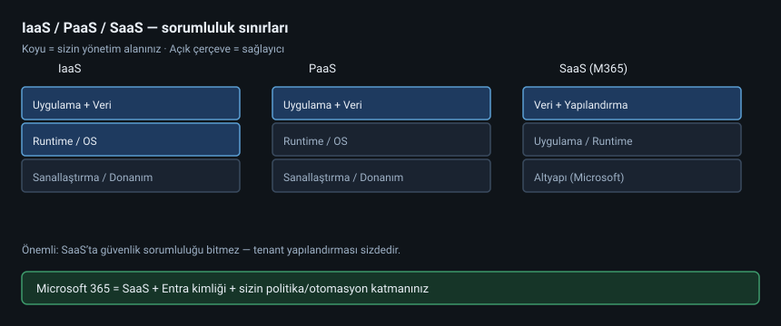
diyagramlar/01-iaas-paas-saas.svg
1.2 Neden kurumlar Microsoft 365’e geçiyor?
Kimlik tekilleşmesi — Bir hesapla mail, dosya, toplantı, CRM eklentisi.Ölçek — 10 kullanıcı da 10.000 kullanıcı da aynı kontrol düzlemi.Güvenlik yatırımı — Microsoft’un tehdit istihbaratı bireysel IT ekibinin yapamayacağı ölçekte.İşbirliği — E-posta + sohbet + dosya + toplantı aynı grafikte.
Trade-off: Veri egemenliği, bağımlılık (vendor lock-in), yanlış yapılandırılmış tenant’ta risk yüzeyi büyür. Uzman bu trade-off’u gizlemez; yönetir.
1.3 Dijital işyeri (Digital Workplace)
Dijital işyeri = insanların işini yaptığı uygulama + kimlik + içerik + süreç bütünü.
KuzeyLojistik örneği:
Persona İhtiyaç M365 karşılığı Ofis planlama Mail, Excel, toplantı Exchange + Excel + Teams Saha sürücüsü Mobil ekip sohbeti, PDF Teams mobil + OneDrive Muhasebe Gizli faturalar SharePoint + DLP + sensitivity label IT Kullanıcı yaşam döngüsü Entra + PowerShell + runbook
1.4 Paylaşılan sorumluluk modeli
SaaS’ta Microsoft altyapıyı korur; sizin yapılandırmanız sizin sorumluluğunuzdadır.
Sorumluluk Microsoft Müşteri (siz) Fiziksel DC güvenliği ✓ Hizmet uptime ✓ Tenant yapılandırması ✓ Kullanıcıya doğru lisans ✓ Conditional Access politikası ✓ Veri sınıflandırma / DLP ✓ Offboarding ✓
Case Study 1-A — “Bizim verimiz Microsoft’ta güvende” yanılgısı
KuzeyLojistik, tüm dosyaları “Everyone except external” paylaşımına açmış. Microsoft platformu ayakta; veri sızıntısı yine müşteri hatası.
Ders: SaaS güvenliği = platform güvenliği × yapılandırma hijyeni.
1.5 Temel bulut terimleri (ezber değil, bağlantı)
Tenant: Kurumun M365’daki yalıtılmış alanı (kiracı).Directory / Entra ID: Kullanıcı, grup, uygulama kimliklerinin deposu.Workload: Exchange, SharePoint, Teams gibi iş yükü hizmetleri.Identity plane / data plane: Kimlik kontrolü vs. içeriğin kendisi.Region / geo: Verinin fiziksel olarak durduğu coğrafya (Compliance!).
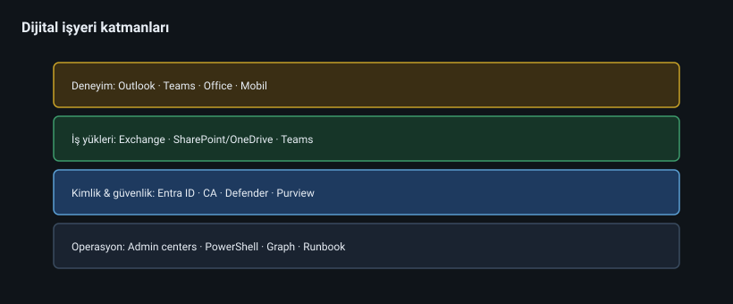
diyagramlar/01-dijital-isyerleri-katmanlari.svg
1.6 Laboratuvar 1 — Kavram haritası
Kendi (veya hayali) üniversite kulübünüz için 5 persona yazın.
Her persona için bir SaaS ihtiyacı eşleştirin.
Hangi ihtiyaçların kimlik , hangilerinin içerik , hangilerinin işbirliği katmanına düştüğünü işaretleyin.
1.7 Kontrol listesi
[ ] IaaS / PaaS / SaaS farkını bir cümleyle anlatabiliyorum
[ ] Paylaşılan sorumluluk modelini örnekle açıkladım
[ ] KuzeyLojistik personae’sini okudum
[ ] Sonraki: tenant, lisans, portal haritası
Sonraki: Bölüm 2 — M365 ekosistemi, tenant ve lisanslama 1.8 Derinleşme: Çoklu bulut ve M365
Birçok kurum AWS/GCP + M365 birlikte kullanır. Kimlik köprüsü (Entra) ve veri çıkış yolları (Power Platform bağlayıcıları, e-posta ile AWS ticket vb.) mimari risk olur.
Soru listesi: Hangi sistem authoritative HR? Dosya master’ı nerede? Yedek kimin sorumluluğu?
1.9 Değişime direnç ve benimsenme
Teknik göç başarılı, kullanıcı hâlâ eski file share kullanıyor olabilir. Adoption: şampiyon kullanıcılar, kısa eğitim, eski sistemin kapanış tarihi.
1.10 Derinleşme: TCO ve gizli maliyetler
Lisans satır fiyatı toplam maliyet değildir. TCO’ya ekleyin:
Migrasyon danışmanlığı / araçları
Ağ çıkış ve proxy yeniden tasarımı
Eğitim ve şampiyon zamanı
Üçüncü parti yedekleme
Güvenlik eklentileri
Yardım masası ticket artışı (ilk 90 gün)
Yöntem: 3 yıllık TCO tablosu (lisans + proje + operasyon). CFO dilinde konuşun.
Bölüm 2 — Microsoft 365 Ekosistemi, Tenant ve Lisanslama
2.1 Büyük resim: ekosistem haritası
Microsoft 365 bir ürün değil, ürün ailesi + kimlik + güvenlik + uyumluluk katmanıdır.
Ana parçalar:
Productivity apps — Word, Excel, PowerPoint, Outlook, OneNote, Loop…İş yükleri — Exchange Online, SharePoint Online, OneDrive, Teams, Viva…Kimlik — Microsoft Entra ID (eski adıyla Azure AD)Güvenlik — Defender for Office 365, Entra ID Protection, Conditional AccessUyumluluk — Purview (DLP, retention, eDiscovery, labels)Yönetim düzlemi — Admin centers + PowerShell + Graph API
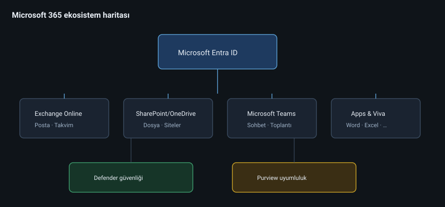
diyagramlar/02-m365-ekosistem.svg
2.2 Tenant nedir?
Tenant , kurumunuzun Microsoft bulutundaki mantıksal evi dir. Genelde bir şirket = bir tenant.
Tenant’a bağlı kritik gerçekler:
Bir birincil doğrulanmış alan adı (ör. kuzeylojistik.com) olur; başlangıçta *.onmicrosoft.com da vardır.
Kullanıcılar UPN (User Principal Name) ile giriş yapar: ayse@kuzeylojistik.com.
Çoğu güvenlik ve lisans politikası tenant kapsamında dır.
Tenant silmek / birleştirmek zordur — tasarımı baştan doğru yapın.
Tenant türleri (öğrenci için)
Tür Ne zaman Microsoft 365 Developer Öğrenme, Graph, sandbox Trial / demolar Kısa süreli deneme Production Gerçek şirket Education Üniversite / okul
Uyarı: Öğrenci laboratuvarını production ile karıştırmayın. Asla gerçek müşteri verisini developer tenant’a taşımayın.
2.3 Admin center labirenti
Yeni gelenler portallar arasında kaybolur. Harita:
Portal Odak admin.microsoft.com Genel M365 yönetimi, kullanıcı, lisans entra.microsoft.com Kimlik, CA, uygulamalar, roller admin.exchange.microsoft.com Posta kutusu, akış, alıcılar admin.teams.microsoft.com Teams politikaları admin.sharepoint.com Site, paylaşım, depolama security.microsoft.com Defender / tehdit compliance.microsoft.com (Purview) DLP, retention, eDiscovery endpoint.microsoft.com Intune cihaz yönetimi
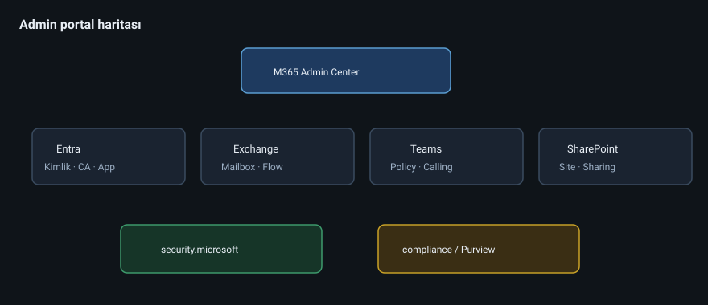
diyagramlar/02-admin-portallari.svg
2.4 Lisanslama — uzmanların en çok yanlış yaptığı yer
Lisans = kullanıcının hangi özelliği açabileceğinin anahtarı .
Temel aileler (öğrenme için sadeleştirilmiş):
SKU ailesi Tipik içerik Microsoft 365 Business Basic/Standard/Premium KOBİ Microsoft 365 E3 Kurumsal üretkenlik + uyumluluk temeli Microsoft 365 E5 E3 + gelişmiş güvenlik / telefon / analytics Office 365 E1/E3/E5 Uygulama odaklı (kimlik/cihaz katmanı daha sınırlı) Exchange Online Plan 1/2 Sadece posta EMS / Entra ID P1/P2 Kimlik & Conditional Access özellikleri
Kural: “Herkese E5” nadiren doğru çözümdür. Risk profiline göre katmanlı lisans tasarlayın.
KuzeyLojistik lisans tasarımı (v1)
Persona Öneri Neden Ofis çalışanı M365 Business Premium veya E3 CA + Intune ihtiyacı Saha sürücüsü Business Basic + Teams Maliyet / mobil IT / güvenlik E5 veya E3+ güvenlik eklentileri Gelişmiş tehdit & eDiscovery Misafir danışman Misafir erişimi (B2B) Lisans tüketmeden işbirliği
2.5 Domain, DNS ve ilk gün
Yeni tenant kurulumunun klasik sırası:
Tenant oluştur / ülke / dil
Özel alan adını ekle ve DNS TXT ile doğrula
MX, Autodiscover, SPF, DKIM, DMARC kayıtlarını planla (Bölüm 4)
Global Admin’i acil durum hesabı olarak ayır (break-glass)
Lisansları satın al / dene
İlk kullanıcıları oluştur (henüz toplu migrasyon yok)
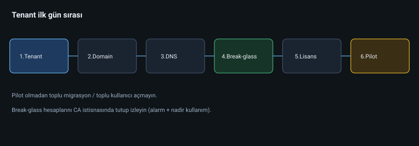
diyagramlar/02-tenant-ilk-gun.svg
2.6 Case Study 2-A — Yanlış tenant ülkesi
Olay: IT stajyeri trial tenant’ı yanlış “data location” ile açtı. Sonra production’a “taşırız” sandılar.
Gerçek: Tenant coğrafyası sonradan kolay değişmez.
Ders: İlk gün kararları geri dönüşü pahalıdır. Checklist kullanın.
2.7 Case Study 2-B — Lisans israfı
KuzeyLojistik 180 E5 aldı; 120 kişi yalnızca mail + Teams kullanıyor. Yıllık maliyet şişti.
Çözüm: Persona bazlı lisans matrisi + aylık lisans kullanım raporu (Graph / admin reports).
2.8 Laboratuvar 2
Developer tenant’ta özel bir alan adı eklemeyi (veya *.onmicrosoft.com ile devamı) belgeleyin.
Admin rollerinden Global Reader ile dolaşın — neyi görebiliyorsunuz?
3 persona için lisans matrisi çizin (Excel yeter).
2.9 Kontrol listesi
[ ] Tenant / domain / UPN ilişkisini anlattım
[ ] Hangi portalın ne işe yaradığını ezbere bilmeden haritadan bulabiliyorum
[ ] Katmanlı lisans mantığını savundum
[ ] Break-glass hesabı fikrini not ettim
Sonraki: Bölüm 3 — Entra ID kimlik temelleri 2.10 Derinleşme: SKU karar ağacı
Sorular sırayla:
Kaç kullanıcı / hangi sektör? (KOBİ Business ailesi vs Enterprise E3/E5)Cihaz yönetimi şart mı? (Intune → Business Premium veya EMS/Intune eklentili plan)Gelişmiş tehdit koruması? (Defender for Office P2 özellikleri → E5 veya eklenti)eDiscovery Premium / advanced audit? (E5 Compliance / ilgili eklentiler)Saha çalışanı sadece mail+Teams mi? (düşük SKU + mobil)
Karar çıktısı bir Excel olmalı: Persona | SKU | Aylık maliyet tahmini | Gerekçe | Risk if not.
2.11 Yönetim rolleri — ilk gün atama önerisi
Rol Kim Global Administrator 2 break-glass + nadiren kullanılan PIM Global Reader SOC / denetçi gözlem User Administrator Helpdesk kıdemli Helpdesk Administrator L1 Exchange Administrator Mail ekibi SharePoint Administrator İşbirliği ekibi Teams Administrator İşbirliği ekibi Security / Compliance Administrator Güvenlik ekibi (ayrı kişiler tercih)
2.12 Self-service ve varsayılan riskler
Yeni tenant’larda sık gevşek kalanlar:
Users can register apps
Guest invite unrestricted
Anyone links
Legacy auth
Teams team creation by everyone
İlk hafta “varsayılan sıkılaştırma” checklist’i çalıştırın (Bölüm 7 ile birlikte).
2.13 Derinleşme: Çok domainli organizasyon
Şirket birleşmesi: kuzeylojistik.com + dogukargo.com
Seçenekler:
Tek tenant, çok domain (genelde tercih)
İki tenant + galeri / migration (siyaset / yasal)
Tek tenant’ta:
UPN suffix politikası
Email address policy
Marka / Outlook imprint
Eski domain’i accepted domain olarak tutma süresi
2.14 Partner ilişkileri ve GDAP (kavram)
MSP / partner erişimi:
Granular Delegated Admin Privileges
Süreli, az yetkili
Partner’ın Global Admin’i “sonsuz” olmasın
2.15 Çalışılmış senaryo: Trial’dan prod’a
Trial üzerinde pilot yapılan yapılandırmayı prod’a “elle kopyalamayın”.
Infrastructure-as-config notları + ekran envanteri + mümkünse script ile yeniden kurun.
Bölüm 3 — Kimlik Temelleri: Microsoft Entra ID
3.1 Neden kimlik her şeyin merkezinde?
Microsoft 365’te neredeyse her kapı kimlikle açılır. Yanlış kimlik modeli = yanlış güvenlik, yanlış grup, yanlış Teams, yanlış lisans.
Entra ID (eski Azure Active Directory), bulut dizin hizmetidir. Şunları tutar:
Kullanıcılar (members) ve misafirler (guests)
Gruplar (security, Microsoft 365, dinamik)
Uygulama kayıtları / kurumsal uygulamalar
Cihaz nesneleri
Roller ve Conditional Access politikaları
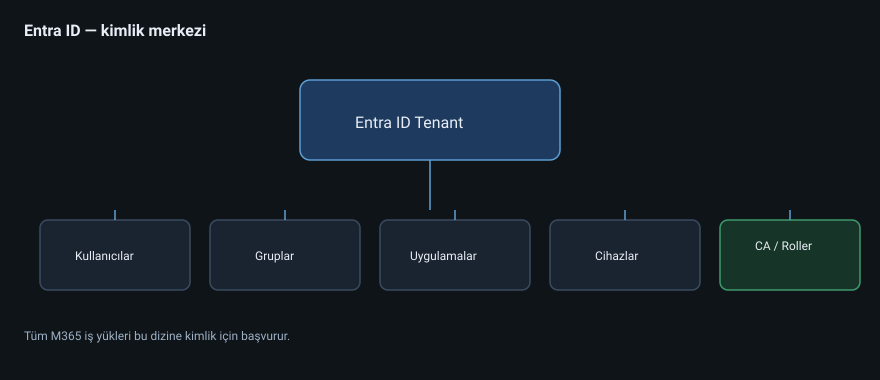
diyagramlar/03-kimlik-merkezi.svg
3.2 Kullanıcı nesnesi anatomisi
Kritik alanlar:
Alan Anlamı UPN Giriş adı (ali@kuzeylojistik.com) mail SMTP adresi (Exchange ile hizalı olmalı) objectId Benzersiz GUID — otomasyonda buna güvenin onPremisesSyncEnabled Hibrit senkron mu? accountEnabled Hesap açık mı? assignedLicenses Hangi SKU’lar
Pratik kural: Görünen ad değişebilir; otomasyonda objectId veya sabit bir employeeId kullanın.
3.3 Grup türleri — karıştırmayın
Tür Amaç E-posta? Teams? Security group Erişim / lisans / CA ataması Genelde hayır Hayır Microsoft 365 group İşbirliği nesnesi Evet Evet (ekip bağlanabilir) Distribution list Sadece mail dağıtımı Evet Hayır Mail-enabled security Hem mail hem ACL Evet Hayır Dinamik grup Kurala göre üyelik Türe bağlı Türe bağlı
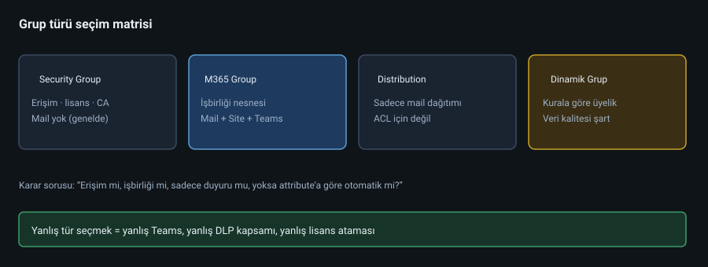
diyagramlar/03-grup-turleri.svg
Ne zaman hangisi?
“Satış klasörüne erişim” → Security group
“Proje ekibi + dosya + plan” → Microsoft 365 group (+ Teams)
“Tüm şirkete duyuru” → Distribution list veya M365 group (moderasyonla)
“İstanbul ofisindeki herkes” → Dinamik güvenlik grubu (city -eq "Istanbul")
3.4 RBAC: En az yetki ilkesi
Global Administrator her şeyi yapar — bu yüzden günlük iş için kullanılmaz.
Önerilen yaklaşım:
Break-glass Global Admin (2 adet, MFA’lı, CA muaf ama izlenen)Günlük iş için granüler roller : User Administrator, Exchange Administrator, Helpdesk Administrator, Privileged Role Administrator…
Mümkünse Privileged Identity Management (PIM) ile zaman sınırlı yükseltme (P2)
3.5 Kimlik doğrulama evrimi
Parola → MFA → Passwordless (FIDO2 / Authenticator passwordless) → Conditional Access ile bağlama
Conditional Access (CA) = “Eğer X ise, Y iste / engelle”.
Örnek politika iskeleti (KuzeyLojistik):
İsim Koşul Denetim CA-Base-MFA Tüm kullanıcılar (break-glass hariç) MFA zorunlu CA-Block-Legacy Exchange ActiveSync / basic auth Engelle CA-Admin-PhishingResistant Admin rolleri Phishing-resistant MFA CA-Guest-Restrict Misafirler Belirli bulut uygulamaları
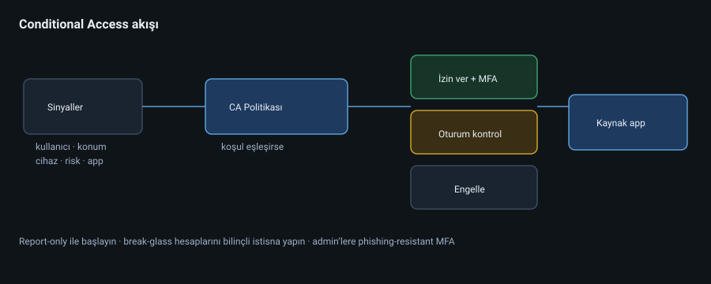
diyagramlar/03-conditional-access-akisi.svg
3.6 Misafir erişimi (B2B)
Dış danışmanı “tam kullanıcı + lisans” yapmak pahalı ve risklidir. B2B guest ile kendi kimliğiyle gelir; sizin kaynaklarınıza sınırlı erişir.
Kontrol listesi:
Misafir davetini kim yapabilir?
Misafirler Teams’te ne görebilir? (org-wide ayarlar)
Misafir erişim gözden geçirmesi (access review) var mı?
3.7 Case Study 3-A — “Herkes Global Admin”
Olay: 8 kişilik IT ekibinin hepsi Global Admin. Stajyer yanlışlıkla bir CA politikasını sildi; yarım gün kilit.
Kök neden: Rol hijyeni yok.
Düzeltme: Rolleri ayır, PIM aç, break-glass’ı CA dışında ama alarmla izle.
3.8 Case Study 3-B — Dinamik grup patlaması
HR “Department” alanını boş bıraktığı için dinamik grup 0 kişi döndü; lisans ataması durdu.
Ders: Dinamik grup = veri kalitesi bağımlılığı. Attribute governance şart.
3.9 Laboratuvar 3
5 test kullanıcısı oluşturun (farklı department).
Bir security group ve bir M365 group oluşturun; farkı Teams’te gözlemleyin.
Basit bir CA politikası tasarlayın (report-only modda başlatın!).
Bir misafir davet edin; hangi kaynaklara eriştiğini yazın.
3.10 Kontrol listesi
[ ] UPN / objectId / lisans ilişkisini biliyorum
[ ] Grup türlerini senaryoya göre seçebiliyorum
[ ] Global Admin’i günlük işte kullanmama gerekçemi savundum
[ ] CA’nın “koşul → denetim” modelini çizdim
Sonraki: Bölüm 4 — Exchange Online 3.11 Derinleşme: Kimlik yaşam döngüsü (Joiner–Mover–Leaver)
Kurumsal kimlik yönetimi üç fiille özetlenir:
Aşama Tetikleyici M365 etkisi Joiner İşe alım Hesap, lisans, grup, MFA kaydı, mailbox Mover Departman / rol değişimi Dinamik grup, lisans, SPO/Teams erişimi Leaver İşten ayrılma Disable, oturum revoke, transfer, hold kararı
Anti-pattern: HR “Excel’den haber verir”, IT üç gün sonra bakar.
İyi pratik: HR sistemi → (mümkünse) otomatik provision; olmazsa aynı gün SLA’li runbook.
Attribute sözleşmesi
Dinamik grup ve lisans otomasyonu şu alanlara bağımlıdır:
department, jobTitle, companyName, officeLocation / cityemployeeId (sabit anahtar)usageLocation (lisans için kritik!)
usageLocation boşsa lisans ataması sessizce başarısız olabilir. Joiner checklist’ine yazın.
3.12 Uygulama kimlikleri ve consent
Kullanıcılar “bu uygulama posta kutunuza erişmek istiyor” diye consent verebilir. Tenant’ta:
Kullanıcı consent’i kısıtlayın (admin consent workflow)
Publisher verification olmayan uygulamaları gözden geçirin
Düzenli olarak Enterprise applications envanteri çıkarın
Bu, Bölüm 8’deki app-only otomasyonun güvenlik kardeşidir.
3.13 Derinleşme: Kimlik doğrulama yöntemleri karşılaştırması
Yöntem Güç Kullanılabilirlik Tipik kullanım Parola + SMS MFA Zayıf-orta Yüksek Miras / geçiş dönemi Authenticator push (number matching) Orta-iyi Yüksek Genel çalışan TOTP (Authenticator) Orta-iyi Yüksek Alternatif FIDO2 güvenlik anahtarı Çok iyi Orta Admin / VIP Windows Hello for Business Çok iyi Yüksek (kurumsal PC) Ofis cihazları Sertifika tabanlı İyi Orta Özel senaryolar Temporary Access Pass Orta Geçici Onboarding / kayıp cihaz
KuzeyLojistik politikası (örnek):
Tüm kullanıcılar: Authenticator number matching zorunlu
Admin rolleri: FIDO2 veya WHfB + phishing-resistant CA
SMS yalnızca istisna listesinde (ve süreli)
3.14 Password protection ve smart lockout
Entra Password Protection:
Global banned password list
Custom banned list (şirket adı, lokasyon, sezon)
On-prem agent ile hibrit senaryoda AD’ye de uygulanabilir
Smart lockout: Brute-force’a karşı kilitleme; gerçek kullanıcının meşru denemelerini ayırt etmeye çalışır. CA ile birlikte düşünün — “sadece lockout yeter” değildir.
3.15 Access reviews ve entitlement (ileri)
Büyük org’da kalıcı grup üyeliği çürür. Access review:
Misafirleri 90 günde bir gözden geçir
VIP güvenlik gruplarını 30/60 günde bir
Teams/M365 group sahiplerine “hâlâ lazım mı?”
Entitlement Management (lisansa bağlı): paket (access package) → onay → süreli erişim → otomatik kaldırma.
3.16 Uygulama proxy ve eski uygulamalar
On-prem HTTP uygulamalarını Entra Application Proxy ile yayımlama:
Modern kimlik + CA cihaz koşulları eski app’e taşınır
VPN’siz erişim senaryoları
Connector makinesi yüksek erişilebilir olmalı
3.17 Loglar: neyi nereye bakarsınız?
Soru Log Kim, nereden giriş yaptı? Sign-in logs Hangi uygulama consent aldı? Audit + enterprise apps Rol ataması ne zaman? Directory audit Riskli oturum? Identity Protection / risky sign-ins CA hangi politikayı uyguladı? Sign-in → Conditional Access sekmesi
Pratik: Bir kullanıcı “giremiyorum” dediğinde önce sign-in log’daki Failure reason ve CA satırını okuyun; tahmin etmeyin.
3.18 Çalışılmış senaryo: Joiner otomasyon tasarımı
Girdiler (HR): employeeId, ad, soyad, department, title, manager, location, startDate
Çıktılar:
UPN üretimi kuralı (ad.soyad@ + çakışma çözümü)
usageLocation = TR
Dinamik gruplarla lisans + güvenlik grubu
Manager alanı (onay akışları için)
TAP veya geçici parola + ilk girişte değişim
Welcome mail (Teams/Exchange hazır olduktan sonra)
Hata yolları: HR attribute boş → kuyruk; lisans tükenmiş → alert; UPN çakışması → -2 suffix.
Bölüm 4 — Exchange Online: Posta, Takvim ve Alıcılar
4.1 Exchange Online ne işe yarar?
Exchange Online (EXO), Microsoft 365’in posta, takvim, kişi ve ortak klasör iş yüküdür. Outlook istemcisi sadece bir yüzdür; asıl motor buluttaki posta kutusu veritabanı ve transport pipeline’dır.
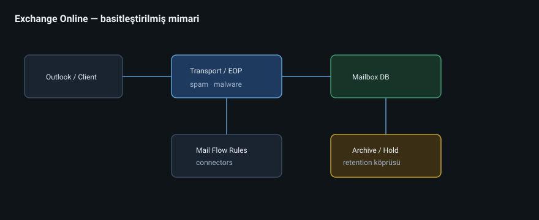
diyagramlar/04-exchange-mimarisi.svg
4.2 Alıcı (recipient) modeli
Exchange’te “her şey bir alıcıdır” zihinsel modeli işinizi kolaylaştırır:
Alıcı türü Ne zaman User mailbox Normal çalışan Shared mailbox info@, destek@ — giriş hesabı yok (doğru kullanımda) Room / equipment mailbox Toplantı odası, projektör Microsoft 365 group mailbox Grup konuşmaları Distribution list Dağıtım Mail contact / mail user Dış kişi / hibrit senaryolar Archive mailbox Uzun süreli arşiv (In-Place Archive)
Shared mailbox altın kuralları
Shared mailbox’a doğrudan giriş (sign-in) açmayın — güvenlik riski.
Yetki: Full Access + Send As (ihtiyaca göre).
Lisans: klasik senaryoda lisansı kullanıcıya verirsiniz; shared’ın kendisi çoğu plan’da lisanssızdır (boyut/özellik limitlerine dikkat).
4.3 DNS: Postanın omurgası
Alan adı doğrulandıktan sonra dış dünyanın sizi bulması için:
Kayıt İş MX Gelen posta nereye Autodiscover CNAME Outlook otomatik kurulum SPF (TXT) Hangi sunucular sizin adınıza mail atabilir DKIM İmza doğrulama DMARC SPF/DKIM başarısızsa ne olsun
Case Study 4-A — SPF unutuldu
KuzeyLojistik pazarlama aracı üçüncü parti relay kullanıyor; SPF’e eklenmemiş. Müşteri spam klasörü.
Ders: Her gönderen sistem envantere + SPF/DKIM’e yazılır.
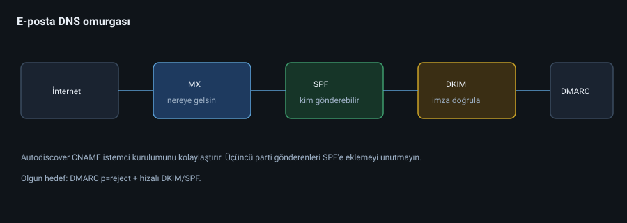
diyagramlar/04-email-dns-akisi.svg
4.4 Mail flow (transport)
Mesaj yolu (basitleştirilmiş):
Gönderen → Edge/Transport → Malware/Spam filtreleri → Mailbox
Yönetici araçları:
Accepted domains — Hangi domain’ler bize aitConnectors — Hibrit / partner akışıTransport rules (mail flow rules) — “Konuda ‘gizli’ varsa yöneticiye BCC” gibiOutbound spam policies
Dikkat: Transport rule ile güvenlik politikası yazmak kolaydır ama debug’ı zordur. Az, belgelenmiş, isimli kurallar kullanın.
4.5 Takvim ve kaynak posta kutuları
Toplantı odası için:
Room mailbox oluştur
Booking policy ayarla (otomatik kabul / delege)
Capacity ve location alanlarını doldur
Teams / Outlook oda listesine ekle
4.6 Arşiv, lit hold, retention (kısa köprü)
In-Place Archive: Kullanıcı posta kutusu şişmesin diye ikinci depoLitigation Hold / eDiscovery hold: Silinse bile sakla (hukuki)Retention policies (Purview): Organizasyon politikası
Repo’daki EnableInPlaceArchive betiği bu kitabın pratik eki gibidir: toplu arşiv açma otomasyonu.
4.7 Case Study 4-B — Shared mailbox kaosı
Destek ekibi shared mailbox’a 6 kişinin kendi Outlook profiliyle “ek hesap” olarak girmesini istedi; IT yanlışlıkla shared’a parola verdi. Hesap MFA’sız kaldı, phishing ile ele geçti.
Düzeltme: Sign-in disable, Full Access ile ekle, CA + mailbox audit.
4.8 Laboratuvar 4
info@ shared mailbox oluşturun; iki kullanıcıya Full Access verin.Bir room mailbox ile toplantı rezerve edin.
SPF/DKIM/DMARC durumunu dokümante edin (tenant’ınıza göre).
Basit bir mail flow kuralı yazın: dışarı giden ve ek > 5 MB ise yöneticiye uyarı.
4.9 Kontrol listesi
[ ] Alıcı türlerini senaryoya eşleyebiliyorum
[ ] Shared mailbox güvenlik modelini anlattım
[ ] DNS beşlisinin (MX/Autodiscover/SPF/DKIM/DMARC) rolünü biliyorum
[ ] Transport rule’ları ölçülü kullanacağım
Sonraki: Bölüm 5 — SharePoint ve OneDrive 4.10 Derinleşme: Autodiscover ve istemci profili
Outlook’un doğru mailbox’ı bulması Autodiscover’a bağlıdır. Yaygın kırılmalar:
Eski on-prem Autodiscover SCP kaydı (hibrit kalıntısı)
Yanlış CNAME
Split-brain DNS
Belirti: sürekli parola soruyor, yanlış sunucuya gidiyor, mobile’da kurulum başarısız.
4.11 Dağıtım grupları vs M365 grupları (posta açısından)
Duyuru listelerinde moderasyon , gönderen kısıtı ve gizli üyelik sık ihtiyaçtır. M365 grupları işbirliği yan etkisi getirir (SharePoint); sadece duyuru için DL daha temiz olabilir.
4.12 Journaling, transport ve üçüncü parti
Bazı sektörler journaling ister. Alternatif: journal rule / connector ile arşiv ürünü. SPF/DKIM’i üçüncü parti gönderenlerle bozmamaya dikkat.
4.13 Mobil cihaz posta politikaları
ActiveSync cihaz politikaları ve modern kimlik doğrulama. Legacy ActiveSync basic auth kapatılmalı; CA ile mobil Outlook zorunluluğu sık tercih.
4.14 Derinleşme: Anti-spam / anti-malware politika mimarisi
Katmanlar:
Connection filtering — IP allow/block, safe list tuzağı (allow list’i şişirmeyin)Anti-spam policy — bulk threshold, spam action (MoveToJunky / Quarantine)Anti-malware — common attachment filter (.exe, .js …)Anti-phishing — mailbox intelligence, impersonation (user + domain)Safe Attachments / Safe Links — Defender for Office 365 spoof intelligence / DMARC — kimlik doğrulama
Politika kapsamı: Anti-phish’i önce VIP / finans grubuna uygulayın, sonra genişletin.
Quarantine operasyonu
Kullanıcı quarantine bildirimleri (çok gürültülü olabilir)
Admin quarantine release yetkisi
Yanlış pozitif süreci: ticket → release → allow/override dikkatli
4.15 Message trace ve Troubleshooting ağacı
Belirti: “Mail gitmedi / gelmedi”
Message trace (alıcı, zaman, subject)
Quarantine’te mi?
Transport rule düşürdü mü?
SPF/DKIM fail + DMARC reject mi?
Alıcı tarafı blokladı mı? (NDR kodu)
Connector / hibrit mi?
NDR kodlarını ezberlemeyin; yorumlamayı öğrenin (5.7.1, 4.4.7 timeout vb.).
4.16 Takvim paylaşımı ve cross-org
Organization relationship / individual sharing
Free/busy hibritte
Rooms’un booking window / conflict yönetimi
4.17 Public Folder mirası
Hâlâ public folder kullanan org’lar var. Modern hedef: SharePoint + Teams. Migrasyon planı olmadan sonsuza taşımayın.
4.18 Çalışılmış senaryo: Destek@ dönüşümü
Önce: 4 kişi shared’a parola ile giriyor.
Hedef:
Shared mailbox, sign-in disabled
Full Access + Send As
Microsoft 365 group + Teams “Destek” (iç tartışma) — mailbox ayrı kalabilir
SLA: gece nöbeti için Graph/Power Automate ile atama (ileride)
Audit ve CA ile koruma
Bölüm 5 — SharePoint Online ve OneDrive
5.1 İki depo, iki niyet
OneDrive SharePoint Sahip Kullanıcı Ekip / iş birimi / kurum Tipik içerik Taslak, kişisel iş dosyası Resmi kütüphane, sayfa, liste Yaşam döngüsü Offboarding’de sahiplik transferi Site sahipleri ve governance Paylaşım Dikkatli ol — aşırı paylaşım yaygın Site izinleri + gruplar
Zihinsel model: OneDrive = “benim masam”, SharePoint = “şirketin dolabı”.
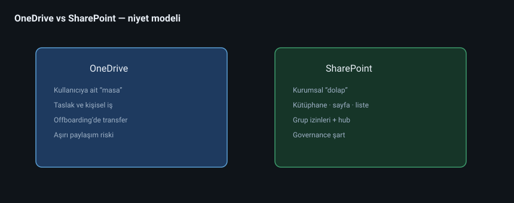
diyagramlar/05-spo-onedrive-model.svg
5.2 Site mimarisi
Modern SharePoint’te temel yapı taşları:
Site (team / communication) Document library List Page / news Hub site (birden fazla siteyi bağlar)Permissions (Azure AD / Entra grupları üzerinden)
Team site vs Communication site
Team site Communication site M365 grubuna bağlı Genelde geniş yayın Dar ekip işbirliği Intranet, duyuru Teams ile doğal eşleşme Yönetici / iletişim ekibi
5.3 İzin modeli (en kritik konu)
SharePoint izinleri kalıtım ile akar: Site → Library → Folder → Item.
Kötü pratik: her klasöre unique permission.
İyi pratik: Entra güvenlik grupları ile site düzeyinde rol (Owners / Members / Visitors).
Rol özeti:
Owners — tam kontrolMembers — düzenlemeVisitors — okuma
Case Study 5-A — 400 unique permission
KuzeyLojistik İK klasöründe her alt klasöre özel izin. Bir kişi işten çıkınca erişim temizliği imkânsız.
Çözüm: Yeniden tasarım — güvenlik grupları + sensitivity label + mümkün olduğunca kalıtım.
5.4 Paylaşım (sharing) politikası
Tenant seviyesinde kararlar:
Dış paylaşım açık mı? (Anyone / New and existing guests / Existing / Only organization)
Anyone link süresi ve parolası?
Varsayılan link türü: Specific people mi, organization mi?
Öneri (KuzeyLojistik v1):
Kurumsal varsayılan = Existing guests + organization links. “Anyone” sadece belirli sitelerde, kısa TTL.
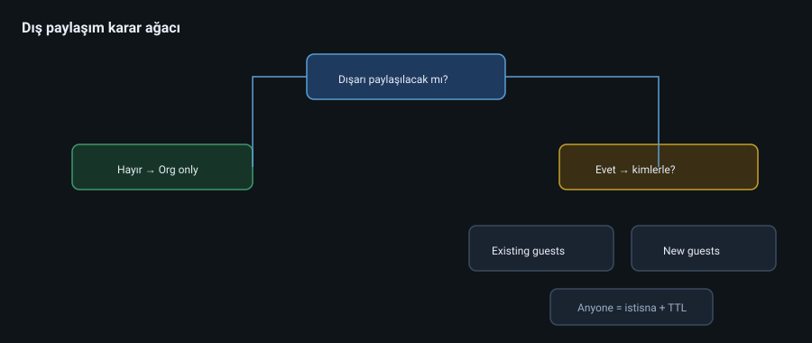
diyagramlar/05-paylasim-karar-agaci.svg
5.5 OneDrive yönetişimi
Depolama kotası
Dış paylaşım (tenant ile hizalı)
Offboarding: Kullanıcı silinmeden önce OneDrive sahipliğini yöneticiye / yöneticiye transfer etKnown Folder Move (Windows Desktop/Documents/Pictures → OneDrive) — endpoint ile birlikte düşünülür
5.6 Metadata, içerik türleri, arama
Dosya adıyla yönetim ölçeklenmez. Metadata (müşteri kodu, yıl, gizlilik) + content type + search schema = bulunabilirlik.
Purview sensitivity label’ları SharePoint/OneDrive dosyalarına işlenebilir — Bölüm 7 ile köprü.
5.7 Case Study 5-B — “Herkes herkese link”
Satış ekibi teklif PDF’lerini Anyone link ile müşteriye attı; linkler Google’a düştü.
Kontroller: Anyone kapat veya watermark + expiry; DLP “dışarıya teklif şablonu” kuralı; eğitim.
5.8 Laboratuvar 5
Bir team site ve bir communication site oluşturun; farkı yazın.
Üç Entra grubu ile Owners/Members/Visitors bağlayın.
OneDrive’dan dışarıya bir dosya paylaşın; ardından tenant sharing raporuna bakın.
Offboarding için OneDrive access delegation adımlarını runbook’a yazın.
5.9 Kontrol listesi
[ ] OneDrive vs SharePoint niyet farkını savundum
[ ] Unique permission tuzağını anlattım
[ ] Sharing politikası için karar ağacı çizdim
[ ] Offboarding’de OneDrive transferini unutmam
Sonraki: Bölüm 6 — Microsoft Teams 5.10 Derinleşme: Hub ve intranet bilgi mimarisi
KuzeyLojistik intranet önerisi:
Home hub (communication) — duyuruIK hub — politikalar (yalnızca dahili)Operasyon hub — saha prosedürleriHer hub altında 3–7 site; daha fazlası arama ve sahiplik sorunudur
Navigation + search + news = intranet başarısı. Sadece “dosya dump” intranet değildir.
5.11 Versiyon geçmişi, geri dönüşüm ve dosya kurtarma
Library versioning (major/minor)
Recycle bin (site + site collection)
OneDrive restore / SharePoint restore (ransomware senaryosu)
Retention hold varsa kullanıcı “sildim” sanır ama durur — destek bunu bilmeli
5.12 Sync istemcisi ve Known Folder Move
Windows’ta Desktop/Documents OneDrive’a yönlendirme verimliliği artırır ama:
Çok büyük PST / VM imajlarını OneDrive’a koymayın
Instrumentasyon / mühendislik klasörleri için policy istisnası
5.13 Derinleşme: Site tasarım kalıpları
Kalıp A — Departman sitesi
Owners: departman müdürü + IT liaison (en az 2)
Members: güvenlik grubu SG-Dept-X-Members
Visitors: isteğe bağlı geniş okuma
Kütüphaneler: Politikalar (read), Çalışma (edit), Arşiv (read)
Kalıp B — Proje sitesi
Bitiş tarihi + sahiplik yenileme
Dış misafirler için ayrı Private channel / ayrı site tercihi
Proje bitince archive + read-only
Kalıp C — Kayıt merkezi (records)
Label + retention
Düzenleme kısıtı
eDiscovery dostu bilgi mimarisi
5.14 Arama yönetimi
Managed properties / crawled properties (kavram)
Promote sonuçlar (bookmarks)
Vertical’ler (ör. Sadece Politikalar)
Kullanıcı “bulamıyorum” diyorsa: izin mi, metadata mı, search şeması mı?
5.15 Paylaşım raporları ve oversharing avı
Düzenli işler:
Anyone link envanteri
“Entire organization” ile paylaşılan hassas kütüphaneler
Misafirlerin Owner olduğu siteler (anti-pattern)
Orphaned sites (sahipsiz)
5.16 Çalışılmış senaryo: İK dosya göçü
Kaynak: \\fs01\HR (NTFS ACL karmaşası)
Hedef: spo-hr site + 3 kütüphane
Adımlar: envanter → ACL sadeleştirme (gruplara) → pilot 1 klasör → Migration Manager → doğrulama → eski share read-only → kapatma tarihi.
Bölüm 6 — Microsoft Teams ve İşbirliği Mimarisi
6.1 Teams nedir? (Sadece sohbet değil)
Teams; sohbet + kanal + toplantı + dosya + uygulama + telefon yüzeyidir. Altında çoğu zaman:
Microsoft 365 Group
SharePoint site (Files sekmesi)
Exchange (grup mailbox / takvim)
OneDrive (özel sohbet dosyaları)
vardır. Bu yüzden Teams’i “ayrı ürün” sanmak yönetim hatalarına yol açar.
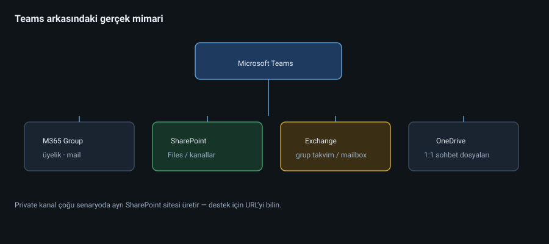
diyagramlar/06-teams-arkitektur.svg
6.2 Team bilgi mimarisi
Team
├─ Kanallar (Standard / Private / Shared)
│ ├─ Posts
│ ├─ Files → SharePoint klasörü
│ └─ Sekmeler (Wiki değil; modern Apps / Pages)
├─ Üyelik → M365 Group
└─ Politikalar → Teams admin center
Kanal türleri
Tür Görünürlük Ne zaman Standard Tüm ekip Varsayılan iş Private Seçili üyeler Hassas alt proje Shared Başka team / dış Çok-ekipli iş
Governance uyarısı: Private/Shared kanal çoğalması SharePoint izin karmaşıklığını artırır. Bilinçli kullanın.
6.3 Politikalar (Teams admin)
Önemli politika aileleri:
Messaging policies — kim kimle sohbet eder, GIF, edit…Meeting policies — kayıt, dışarıdan katılım, lobbyApp permission / setup policies — hangi uygulamalarCalling policies — PSTN / Teams PhoneLive events / Town hall politikalarıTeams templates — standart ekip iskeleti
KuzeyLojistik örneği:
Persona Meeting Messaging Genel çalışan Kayıt açık, dışarı lobby Standart Saha Mobil optimize GIF kapalı (bant genişliği) Yönetim Webinar özellikleri —
6.4 Yaşam döngüsü: Team enflasyonu
Her proje için yeni team = 2 yıl sonra 800 ölü team.
Çözüm seti:
Naming policy (Dept-Project-...)Expiration / renewal (Group expiration — Entra)Archiving Templates + onaylı oluşturma (request form + otomasyon)Owners minimum 2 kişi
6.5 Toplantılar ve uyumluluk
Toplantı kaydı OneDrive / SharePoint’e düşer — retention burada geçerli
Dış katılımcı + anonim lobby politikası güvenlik olayıdır
Sensitivity label ile toplantı şifreleme / lobby zorunluluğu (lisansa bağlı)
6.6 Case Study 6-A — “Gölge IT Teams’i”
Pazarlama, IT’ye sormadan 40 team açtı; müşteri verisi dış misafirlere açık kanallarda.
Müdahale: Dış erişimi kısıtla, naming + expiration aç, mevcut team’leri sınıflandır (keep / merge / archive), DLP eğitimi.
6.7 Case Study 6-B — Dosya nerede?
Kullanıcı “Teams’te kayboldu” dedi. Aslında private kanalın ayrı SharePoint sitesi vardı.
Ders: Destek ekibi Teams = SharePoint eşlemesini bilmeli. Graph/PowerShell ile site URL’sini bulun.
6.8 Laboratuvar 6
Template’siz bir team açın; Files’ın SharePoint URL’sini bulun.
Private kanal ekleyin; ayrı site oluştuğunu doğrulayın.
Meeting policy’de dışarıdan katılımı kısıtlayın; test edin.
Naming policy taslağı yazın (3 kural).
6.9 Kontrol listesi
[ ] Teams’in altındaki Group/SPO/EXO ilişkisini çizdim
[ ] Kanal türü trade-off’unu biliyorum
[ ] Team enflasyonuna karşı 3 kontrol saydım
[ ] Destek için “dosya hangi sitede?” yolunu biliyorum
Sonraki: Bölüm 7 — Güvenlik, uyumluluk ve Zero Trust 6.10 Derinleşme: Voice / Teams Phone
Kurumlar klasik santrali Teams’e taşır:
Calling Plan / Operator Connect / Direct Routing seçenekleri
Acil arama (emergency calling) lokasyon bilgisi
Auto attendant & call queue
Bu konu başlı başına uzmanlık alanıdır; M365 admin’i en azından seçenek farklarını ve lisans etkisini bilmelidir.
6.11 Rooms ve paneller
Teams Rooms cihazları, hesap modeli (resource account), çevre birimleri ve meeting policy istisnaları. Oda hesabı kullanıcı gibi lisanslanır (Rooms lisansları).
6.12 Dış erişim vs misafir erişimi
External access: federasyonla diğer Skype/Teams org (presence/chat)Guest access: Azure B2B ile team’e üye
İkisini karıştırmak destek ticket’larının klasik kaynağıdır.
6.13 Derinleşme: Bilgi mimarisi karar ağacı
Yeni iş ihtiyacı geldiğinde:
Kalıcı departman mı? → Departman team (uzun ömür)Geçici proje mi? → Project team + expirationSadece duyuru mu? → Teams yerine communication site / org-wide (dikkat)Hassas alt grup mu? → Private channel veya ayrı team (trade-off bilinerek)Çok şirketli mi? → Shared channel / B2B guest net kurallarla
6.14 Toplantı güvenliği checklist
Lobisiz anonim katılım?
Dış kullanıcı sunum yapabilir mi?
Kayıt otomatik mi, nereye düşer, retention?
Watermark / end-to-end encryption gereken toplantılar?
VIP toplantılarda sensitivity label
6.15 Uygulama yönetişimi
Global app permission policy: hangi apps
Blocked apps list
Setup policy ile pin’lenen apps (yardım masası)
Üçüncü parti chatbot / connector riski
6.16 Network anahtar noktaları (önizleme)
Teams ses/görüntü UDP ve belirli URL/IP aralıklarına bağımlıdır. Split tunneling ve proxy hataları “Teams bozuk” ticket’larının yarısıdır. Ayrıntı: Bölüm 17 (Ağ).
6.17 Çalışılmış senaryo: 800 team temizliği
Last activity < 90 gün → aday
Owner yok → IT sahipliği geçici
Keep / Merge / Archive karar matrisi
Naming policy + expiration aç
Yeni team için talep formu (Power Automate onay)
Bölüm 7 — Güvenlik, Uyumluluk ve Zero Trust
7.1 Zero Trust tek cümle
Asla güvenme, hep doğrula — kimlik, cihaz, oturum, uygulama ve veri sürekli değerlendirilir.
Microsoft 365’te Zero Trust pratikte şu motorlarla yürür:
Entra ID + Conditional Access — kim giriş yapıyor, nereden, hangi uygulamayaIntune / cihaz uyumu — cihaz sağlıklı mıDefender for Office 365 — phishing, malware, spoofPurview — veri sınıflandırma, DLP, retention, eDiscoveryDefender / XDR sinyalleri — tehdit avı
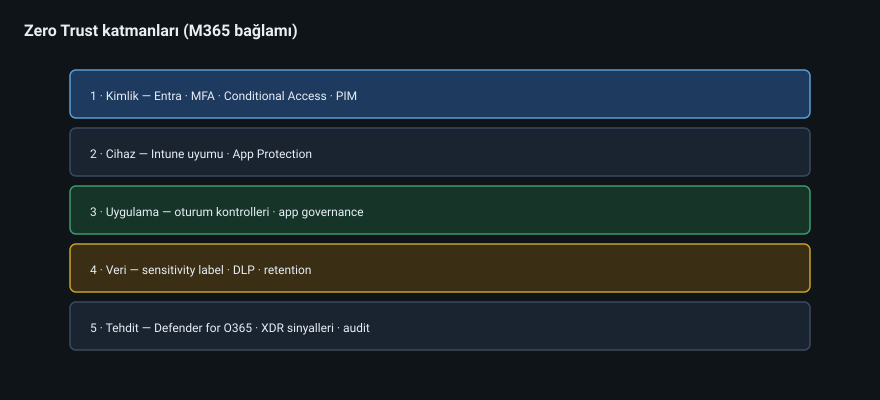
diyagramlar/07-zero-trust-katmanlari.svg
7.2 Kimlik güvenliği derinliği
MFA’dan phishing-resistant’a
SMS MFA artık yeterli sayılmaz (SIM swap, prompt bombing). Hedef:
Authenticator number matching
FIDO2 / passkey / certificate (admin’ler için)
CA ile risk tabanlı engelleme (Entra ID Protection — P2)
Legacy authentication
Basic auth / eski protokoller MFA’yı baypas edebilir. Kapatın (CA veya security defaults / authentication policies).
7.3 Defender for Office 365 (özet uzman yolu)
Katman Ne yapar Exchange Online Protection (EOP) Spam, malware temel Safe Links Zararlı URL zamanında yeniden yazma/kontrol Safe Attachments Sandbox Anti-phishing politikaları Impersonation koruması Quarantine / Threat Explorer İnceleme
Case Study 7-A — CEO fraud
ceo@kuzeynlojistik.com (typosquat) muhasebeye EFT istedi. Safe Links + anti-impersonation + DMARC reject + finans süreci (sözlü teyit) birlikte engeller.
7.4 Purview: veri odaklı güvenlik
Sensitivity labels
Örnek taksonomi (KuzeyLojistik):
Etiket Örnek Koruma Genel Broşür Yok / watermark Dahili Prosedür Org-only Gizli Müşteri sözleşmesi Şifreleme + dışarı engel Çok gizli Maaş Az kişi + DLP
DLP (Data Loss Prevention)
Koşul örnekleri:
5+ TC kimlik / kredi kartı dışarı mail → engelle + uyarı
“maaş” etiketi Teams/SPO dış paylaşım → engelle
Retention & eDiscovery
Retention: ne kadar sakla / sil
eDiscovery: hukuki hold + arama + dışa aktarım
Audit log: kim ne yaptı (varsayılan süreleri bil; uzun tutmak lisans/ayar ister)
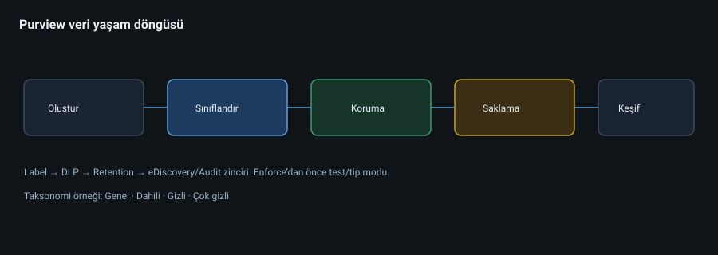
diyagramlar/07-purview-veri-yasam.svg
7.5 Secure Score ve ölçüm
Microsoft Secure Score bir yıldız yarışı değil , önceliklendirme listesidir. Her iyileştirmeyi iş etkisine göre seçin. “Score’u %100 yap” hedefi yanlış; “kritik kimlik boşluklarını kapat” doğrudur.
7.6 Case Study 7-B — DLP false positive felaketi
Muhasebe Excel’lerinde “IBAN” sütunu var diye DLP tüm dış maili kesti. İş durdu; DLP kapatıldı (daha kötü).
Doğru yaklaşım: Policy’yi staging / tip modunda başlat, istisna yolları tanımla, kullanıcıya gerekçeli bildirim, sonra enforce.
7.7 Laboratuvar 7
Secure Score’da en yüksek etkili 5 eylemi listeleyin; 2’sini lab’da uygulayın.
Report-only bir CA ile “tüm kullanıcılar MFA” tasarlayın.
İki sensitivity label oluşturup bir Word dosyasına uygulayın.
Basit bir DLP kuralını test mode ile çalıştırın; eşleşmeleri okuyun.
7.8 Kontrol listesi
[ ] Zero Trust’ı beş katmanda anlattım
[ ] Legacy auth riskini biliyorum
[ ] Label + DLP + retention farkını ayırıyorum
[ ] DLP’yi önce test modunda açacağım
Sonraki: Bölüm 8 — Yönetim, PowerShell ve Graph 7.9 Derinleşme: Saldırı zinciri ve M365 kontrolleri
Basitleştirilmiş BEC / hesap ele geçirme zinciri:
Phishing mail gelir → EOP / Defender / Safe LinksKullanıcı kimlik bilgisi verir → MFA / passwordless / CA risk
Saldırgan oturum açar → Conditional Access (konum, cihaz) + Identity Protection
Inbox kuralı ile gizleme → Mailbox audit / anomaly
Finansal dolandırıcılık → süreç kontrolü (out-of-band teyit)
Her halkada bir kontrol yoksa zincir kırılmaz. “Sadece antivirus” yetmez.
7.10 Audit ve adli hazırlık
Unified Audit Log’un açık olduğundan emin olun
Kritik mailbox’larda audit / litigation ihtiyacını önceden konuşun
Time-to-investigate: Threat Explorer + audit + sign-in logs birlikte okunur
Olay sonrası: session revoke, parola/reset veya token invalidation, kural temizliği
7.11 Güvenlik işletim ritmi (önerilen)
Ritim İş Günlük Quarantine / high severity alerts Haftalık Secure Score deltas, sharing anomalies, guest review örnekleme Aylık CA report-only → enforce adayları, lisans+rol gözden geçirme Çeyreklik Access review, break-glass testi, IR masa tatbikatı
7.12 Derinleşme: Conditional Access politika kataloğu (referans)
KuzeyLojistik v2 katalog (isimlendirme standardı: CA-###-Amaç):
ID Amaç Mod CA-001-Base-MFA Tüm bulut uygulamaları MFA Report→On CA-002-Block-Legacy Legacy auth engel On CA-003-Admin-PhishResist Directory rollerine phishing-resistant On CA-004-Compliant-Device-Windows Office apps için uyumlu cihaz (ofis) Pilot CA-005-Guest-Restrict Misafirleri seçili apps On CA-006-Risky-SignIn Yüksek risk engel / MFA P2 ise CA-007-Session-SharePoint Browser session controls İsteğe CA-008-Block-Countries İş yapılmayan ülkeler Dikkatli
Dışlama grupları: Break-glass, Acil-erişim-cihazları, migrasyon servis hesapları (süreli!).
7.13 Attack simulation ve bilinç
Attack simulation training ile kontrollü phishing kampanyaları:
Baseline ölç
Eğitim ata
Tekrar ölç
Teknik kontrol + insan katmanı birlikte.
7.14 Insider risk ve communication compliance (kavram)
Hassas sektörlerde:
Ani toplu indirme
İstifa öncesi veri hareketi
Uygunsuz iletişim politikaları
Lisans ve hukuk çerçevesi şart; “herkesi casus gibi izle” değildir.
7.15 Defender XDR köprüsü
M365 sinyalleri (kimlik, email, endpoint) birleşik olaylarda birleşir. SOC için:
Incident kuyruğu
Automated investigation (lisansa göre)
Threat analytics duyuruları
7.16 Çalışılmış senaryo: BEC müdahale 90 dakika
T0: Muhasebe şüpheli EFT maili
T+10: Header + Message trace + Threat Explorer
T+20: Kullanıcı oturum revoke + parola / MFA reset
T+30: Inbox kurallarını temizle
T+40: Benzer mailleri purge / ZAP
T+60: Finans sürecini dondur / sözlü teyit
T+90: Post-incident: DMARC, anti-impersonation, eğitim
Bölüm 8 — Yönetim, PowerShell ve Microsoft Graph
8.1 Neden portal yetmez?
Portal:
tıklanır, unutulur, belgelenmez,
200 kullanıcıda ölçeklenmez,
denetimde “kim yaptı?” sorusuna zayıf cevap verir.
Otomasyon = tekrarlanabilirlik + denetlenebilirlik + hız.
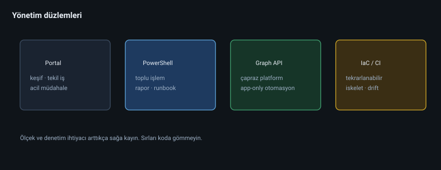
diyagramlar/08-yonetim-duzlemleri.svg
8.2 Yönetim düzlemleri
Düzlem Araç Ne zaman Portal Admin centers Keşif, tekil iş, acil PowerShell EXO, Teams, Graph SDK Toplu iş, rapor, runbook Microsoft Graph REST / SDK Platformlar arası, app-only Infrastructure as Code Arm/Bicep/Terraform (kısmi) Tekrarlanabilir tenant iskeleti
Bu repodaki örnek betikler (EnableInPlaceArchive, ExportM365GroupMembership) otomasyonun küçük ama gerçek parçalarıdır.
8.3 PowerShell’e güvenli giriş
Temel ilkeler
PowerShell 7 tercih edin.Modülleri bilinçli yükleyin: Microsoft.Graph, ExchangeOnlineManagement, vb.
Interactive admin ile öğrenin; production’da app-only (sertifika) düşünün.Sırları koda gömmeyin (Secret Store / Key Vault / ortam değişkeni).
Önce -WhatIf / report-only / CSV dry-run.
Örnek: kullanıcı lisans özeti (öğretici iskelet)
# Öğretici — production'a körlemesine çalıştırmayın
Connect-MgGraph -Scopes "User.Read.All","Organization.Read.All"
Get-MgUser -All -Property DisplayName,UserPrincipalName,AssignedLicenses |
Select-Object DisplayName, UserPrincipalName,
@{n='LicenseCount';e={$_.AssignedLicenses.Count}}
Örnek: M365 grup üyeliği dışa aktarma
Repo: ExportM365GroupMembership/M365GrMembExp.ps1 — grup üyeliğini raporlamak için pratik başlangıç.
8.4 Microsoft Graph zihinsel modeli
Graph = Microsoft 365’in birleşik API’si .
https://graph.microsoft.com/v1.0/users
https://graph.microsoft.com/v1.0/groups/{id}/members
İki auth modeli:
Model Kullanım Delegated Kullanıcı adına, interaktif Application (app-only) Daemon / otomasyon — admin consent
En az yetki: Directory.Read.All her yere yapıştırmayın. İhtiyacınız olan scope’u seçin.
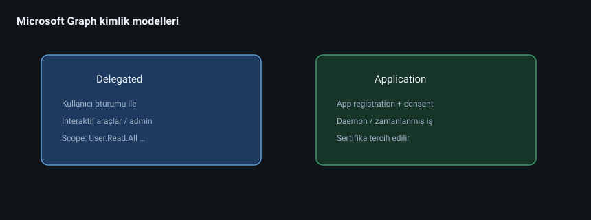
diyagramlar/08-graph-auth.svg
8.5 RBAC + otomasyon güvenliği
Otomasyon hesabı / app registration için ayrı kimlik
Sertifika tabanlı kimlik (client secret uzun ömürlü tuzak)
PIM ile insan admin yükseltmesi
Değişiklikleri ticket / change log ile bağla
8.6 Runbook kültürü
Her tekrarlayan iş bir runbook olur:
Amaç
Önkoşullar (roller, modüller)
Dry-run adımı
Uygulama adımları
Doğrulama
Geri alma (rollback)
Kayıt / audit
Örnek runbook başlıkları: Yeni çalışan onboarding, Offboarding, Shared mailbox açma, Teams arşivleme.
8.7 Case Study 8-A — CSV ile toplu kullanıcı
Stajyer 150 kullanıcıyı CSV ile açtı; UPN domain’i yanlıştı (@kuzeylojistik.onmicrosoft.com). Mail migrasyonu bozuldu.
Önlem: CSV şema doğrulama script’i + 5 kişilik pilot + WhatIf.
8.8 Case Study 8-B — App secret sızıntısı
Client secret GitHub’a gitti.
Önlem: Secret scanning, sertifikaya geçiş, hemen credential rotate, Graph sign-in log incelemesi.
8.9 Laboratuvar 8
Graph Explorer ile /me ve /users?$top=5 çağırın.
Connect-MgGraph ile lisans raporu üretin.Offboarding için 8 adımlık runbook yazın (hesap disable → lisans al → OneDrive transfer → Exchange forward → gruplardan çıkar → CA …).
Repo’daki iki PowerShell örneğini okuyup ne yaptıklarını yorumlayın.
8.10 Kontrol listesi
[ ] Portal / PS / Graph ne zaman diye ayırıyorum
[ ] App-only vs delegated farkını anlattım
[ ] Runbook şablonum var
[ ] Sırrı koda gömmeyeceğim
Sonraki: Bölüm 9 — Mimari, hibrit, migrasyon 8.11 Derinleşme: İdempotent otomasyon
İyi otomasyon iki kez çalışınca kırılmaz.
Kullanıcı var mı? Yoksa oluştur, varsa güncelle.
Grup üyeliği zaten var mı? Eklemeyi atla.
Lisans zaten atanmış mı? Tekrar atama.
CSV tabanlı işlerde:
Validate (şema, domain, usageLocation)
Diff (hedef durum vs mevcut)
Apply
Verify (rapor)
8.12 Değişiklik yönetimi
Production tenant’ta:
Değişiklik penceresi (özellikle CA, mail flow, sharing)
Rollback notu (eski politika JSON/export)
İletişim (helpdesk hazır mı?)
Report-only / pilot / enforce üçlüsü sadece CA için değil; DLP ve birçok Teams politikası için de geçerlidir.
8.13 Derinleşme: Graph sorgu kalıpları
GET /users?$select=displayName,userPrincipalName,accountEnabled&$filter=accountEnabled eq true&$top=999
GET /groups/{id}/members
GET /users/{id}/memberOf
GET /auditLogs/signIns?$filter=userPrincipalName eq 'ali@contoso.com'
Throttling: 429 alırsanız Retry-After saygısı. Toplu işlerde batch ($batch) ve sayfalama (@odata.nextLink) zorunlu.
8.14 PnP / Exchange / Teams modül sınırları
İhtiyaç Araç Kullanıcı/grup/lisans Graph Mailbox/retention/EXO özel Exchange Online PS Team politika derinliği Teams PS / admin center SPO site/provision PnP.PowerShell / Graph
“Her şeyi Graph ile yaparım” henüz her senaryoda doğru değil; ama yön Graph’a doğrudur.
8.15 CI ile otomasyon
Örnek boru hattı:
PR → syntax / PSScriptAnalyzer
Onay kapısı
App-only ile test tenant
Manuel onay
Prod
8.16 Çalışılmış senaryo: Aylık lisans savurganlık raporu
Job her ayın 1’i:
Assigned vs sign-in 30/60/90 gün
SKU bazlı maliyet tahmini
Yöneticilere CSV + 5 maddelik özet
“Kaldırılabilir aday” listesi (insan onayı olmadan kaldırma!)
Bölüm 9 — Mimari, Hibrit, Migrasyon ve Uzman Uygulamalar
9.1 Uzman neyi farklı yapar?
Uzman “ayar açmaz”; gereksinim → kısıt → seçenek → karar → kanıt zinciri kurar.
Mimari sorular:
Kimlik nerede authoritative? (bulut-only vs hibrit)
Veri nerede durmalı? (geo, retention, yasal)
Dış işbirliği ne kadar açık?
Hangi persona hangi lisansı alır?
Operasyon nasıl tekrarlanır? (runbook / IaC)
Krizde kim ne yapar? (break-glass, IR)
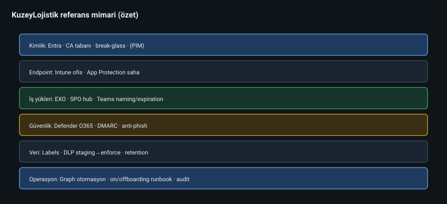
diyagramlar/09-referans-mimari.svg
9.2 Kimlik mimarisi seçenekleri
Model Artı Eksi Ne zaman Cloud-only Basit On-prem app zor Yeni / küçük org Hibrit sync (Entra Connect / Cloud Sync) Mevcut AD ile süreklilik Karmaşıklık, sync hataları Klasik kurum Federation (AD FS vb.) Özel auth Operasyon maliyeti Özel gereksinim; çoğu senaryoda artık az tercih
KuzeyLojistik kararı (örnek): Başlangıç cloud-only; ileride on-prem ERP zorunlu kılarsa Cloud Sync ile hibrit.
9.3 Hibrit Exchange notları
Hibrit mail, “birkaç kullanıcı hâlâ on-prem Exchange’te” anlamına gelebilir.
Kritik kavramlar:
Hybrid Configuration Wizard
Mail flow (centralized vs decentralized)
Free/busy paylaşımı
SMTP namespace ortaklığı
Uyarı: Hibrit “geçici köprü” olarak planlanmalı; sonsuza uzayan hibrit operasyonel yük yaratır.
9.4 Migrasyon stratejileri
Posta
Yöntem Not Cutover Küçük org, kısa kesinti Staged Orta Hybrid / MRS Büyük, uzun IMAP / üçüncü parti Kaynak çeşitliliği
Dosya
File share → SharePoint Migration Tool / Migration Manager
Dikkat: izinler, path uzunluğu, “her şeyi root’a dökme”
Teams / içerik
Üçüncü parti araçlar sık gerekir; kanal & private channel karmaşıklığı
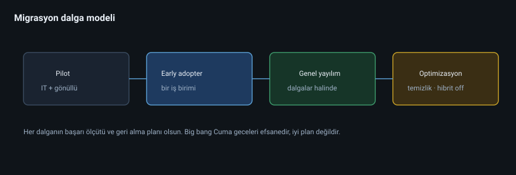
diyagramlar/09-migrasyon-dalgasi.svg
9.5 Referans mimari — KuzeyLojistik 500 kullanıcı
Katmanlar:
Kimlik: Entra ID + CA tabanı + break-glass + PIM (mümkünse)Endpoint: Intune uyumlu cihaz (ofis), saha için mobil App Protectionİş yükleri: EXO + SPO hub intranet + Teams naming/expirationGüvenlik: Defender for O365 + anti-phish + DMARC rejectVeri: Label taksonomisi + DLP staging → enforceOperasyon: Graph otomasyonu + onboarding/offboarding runbookGözlem: Secure Score (öncelikli), audit, haftalık lisans raporu
9.6 Kriz ve iş sürekliliği
Senaryolar:
Global Admin kilitlenmesi → break-glass
Toplu phishing → Threat Explorer + otomatik temizleme + parola/session revoke
Tenant config drift → değişiklik kontrolü + periyodik export
Bölgesel kesinti → Microsoft service health + iletişim planı
9.7 Case Study 9-A — Sonsuz hibrit
Şirket 4 yıldır hibrit; on-prem Exchange sadece 12 mailbox için ayakta. Bakım maliyeti lisans tasarrufundan yüksek.
Karar: Son mailbox’ları taşı, hibriti kaldır, cloud-only’ye sadeleştir.
9.8 Case Study 9-B — Migrasyon “big bang” felaketi
Cuma gecesi 400 GB file share tek seferde taşındı; Pazartesi permission’lar kırık, arama çalışmıyor.
Ders: Dalga (pilot → early adopter → genel), rollback planı, iletişim şablonu.
9.9 Laboratuvar 9
Kendi kurumunuz (veya KuzeyLojistik) için 1 sayfalık referans mimari çizin.
Cloud-only vs hibrit karar matrisini doldurun (5 kriter).
3 dalgalı migrasyon planı yazın (kim / ne / başarı ölçütü).
Bir IR (olay müdahale) tek sayfalık runbook taslağı hazırlayın: “toplu phishing”.
9.10 Kontrol listesi
[ ] Mimari kararları gerekçelendirebiliyorum
[ ] Hibritin maliyetini saklamıyorum
[ ] Migrasyonu dalgalarla planlıyorum
[ ] Break-glass + IR köprüm var
Sonraki: Bölüm 10 — Case study derlemesi 9.11 Derinleşme: Karar kayıtları (ADR)
Her kritik mimari karar bir Architecture Decision Record olur:
Başlık: Cloud-only kimlik
Durum: Kabul
Bağlam: On-prem uygulama yok, 500 kullanıcı
Karar: Entra cloud-only
Sonuç: Connect maliyeti yok; ileride ERP gelirse Cloud Sync değerlendirilecek
Tarih / sahip
Bu, “neden böyle?” sorusunu 18 ay sonra kurtarır.
9.12 Landing zone checklist (M365)
[ ] Break-glass ×2 test edildi
[ ] Naming standards dokümanı
[ ] CA baseline açık
[ ] Legacy auth kapalı
[ ] Sharing varsayılanı sıkı
[ ] Audit açık
[ ] DKIM/DMARC planı
[ ] Backup/IR sahipleri belli
[ ] Lisans/persona matrisi onaylı
9.13 Çalışılmış senaryo: 3 aylık migrasyon programı
Ay 1: kimlik + pilot mail
Ay 2: early adopter dosya + Teams
Ay 3: genel + eski sistem kapatma
Her ay: başarı ölçütü, eğitim, rollback, iletişim şablonu
Bölüm 12 — Uç Nokta Yönetimi: Microsoft Intune
12.1 Neden M365 kitabı Intune içerir?
Modern Microsoft 365 güvenliği kimlik + cihaz ikilisidir. Conditional Access’te “uyumlu cihaz gerekli” derseniz, arkada Intune (veya eşdeğer MDM) olmadan politika havada kalır.
Intune: bulut tabanlı Mobile Device Management (MDM) ve Mobile Application Management (MAM) .
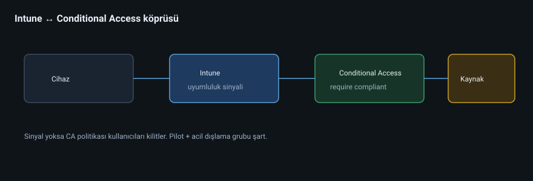
diyagramlar/12-intune-ca-koprusu.svg
12.2 İki büyük model
Model Ne kontrol eder Tipik kullanıcı MDM (cihaz yönetimi) Tüm cihaz: şifre, bitlocker, güncelleme, kısıt Kurumsal dizüstü MAM (uygulama koruması) Sadece şirket uygulamaları / verisi BYOD telefon
KuzeyLojistik: Ofis bilgisayarları → Autopilot + MDM. Saha telefonları → çoğu BYOD → App Protection Policies (Outlook/Teams verisi kişisel fotoğraflara kopyalanmasın).
12.3 Windows Autopilot (kavram)
Fabrika / IT odası yerine cihazı kullanıcıya kutudan çıkarıp Azure/Entra’ya katılım + politika çekme modeli.
Akış (özet):
Donanım hash kaydı
Deployment profile
Kullanıcı giriş yapar (Entra)
Uygulamalar / politikalar iner
CA “compliant” sinyalini görür
12.4 Uyumluluk politikası örnekleri
Ayar Örnek hedef BitLocker açık Windows laptop PIN / biometric Mobil OS sürüm minimum Eski Android engeli Jailbreak / root yok Mobil Güvenlik duvarı Windows
CA köprüsü: Require device to be marked as compliant
12.5 Uygulama dağıtımı
Win32 uygulamaları (Intune win32 content prep)
Microsoft 365 Apps deployment
Store uygulamaları
Gerekli vs kullanılabilir uygulamalar
12.6 Case Study 12-A — CA “compliant” ama Intune yok
IT, CA’da uyumlu cihaz istedi; Intune lisansı / kaydı yoktu. Kullanıcılar kilitlendi.
Ders: CA koşulunu açmadan önce cihaz sinyali kaynağını doğrulayın; acil dışlama grubu hazır tutun.
12.7 Case Study 12-B — BYOD’da aşırı MDM
Saha çalışanına tam MDM dayatıldı; kişisel telefon reddedildi, gölge WhatsApp grupları patladı.
Düzeltme: MAM + App Protection; şirket verisi silinebilir (selective wipe), kişisel fotoğraflar dokunulmaz.
12.8 Laboratuvar 12
Persona başına MDM vs MAM seçin (tablo).
“Compliant device” CA’sını yazın; Intune olmadan ne kırılır sorusunu cevaplayın.
Selective wipe senaryosunu offboarding runbook’una ekleyin.
12.9 Kontrol listesi
[ ] MDM / MAM farkını senaryoyla anlattım
[ ] CA–Intune köprüsünü çizdim
[ ] BYOD için aşırı MDM tuzağını biliyorum
Sonraki: Bölüm 13 — Power Platform ve otomasyon ötesi 12.10 Derinleşme: Uyumluluk + CA test matrisi
Cihaz durumu Beklenen CA sonucu Hybrid join + compliant İzin Registered ama noncompliant Engel / sınırlı BYOD sadece MAM Uygulama korumalı erişim Bilinmeyen cihaz Blok veya web-only
Test hesapları ve test cihazları production politikalarını doğrulamadan genişleteyin.
12.11 Autopilot başarısızlık teşhisi
Hash yanlış / tekrar kayıt
ESP (Enrollment Status Page) timeout
Uygulama bağımlılık sırası
Ağ: cihaz OOBE’de internete çıkamıyor
Bölüm 13 — Power Platform, Bağlayıcılar ve Copilot (M365 Bağlamı)
13.1 Neden bu bölüm var?
M365 uzmanı yalnızca “kullanıcı açmak”la bitmez. İş birimleri Power Automate / Power Apps / Copilot ile kendi çözümlerini üretir. Siz yönetmezseniz: veri sızıntısı, shadow IT, lisans şoku.
13.2 Power Platform parçaları
Ürün İş Power Automate Akış / onay / bildirim Power Apps Az kodlu uygulamalar Power BI Raporlama (ayrı lisans/kapasite sık) Dataverse Veri platformu Copilot Studio / M365 Copilot Yapay zekâ asistanları (lisans + veri sınırı kritik)
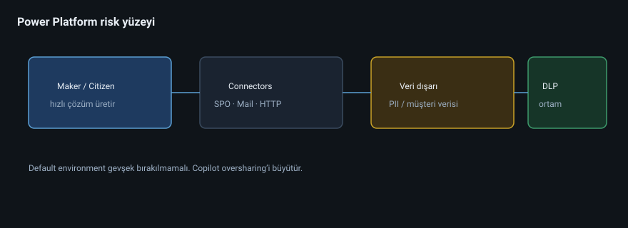
diyagramlar/13-power-platform-risk.svg
13.3 Bağlayıcı ve DLP (ortam)
Power Platform’un kendi ortam (environment) ve DLP politikaları vardır:
Business vs Non-business bağlayıcıları ayırma
“Twitter + SharePoint” gibi tehlikeli kombinasyonları engelleme
Default environment’ı sıkı tutma
KuzeyLojistik kuralı: Üretim akışları ayrı environment; maker’lar için geliştirme ortamı; bağlayıcı DLP zorunlu.
13.4 Microsoft 365 Copilot — yönetici gözü
Copilot, kullanıcının erişebildiği M365 verisi üzerinde çalışır. Yani:
Yanlış paylaşılmış dosya → Copilot da görebilir (kullanıcı görebiliyorsa)
Oversharing sorunu, AI ile büyür
Sensitivity label + least privilege + sharing hijyeni = Copilot hazırlığının temeli
Hazırlık kontrol listesi:
Oversharing taraması
Etiket / DLP olgunluğu
Misafir erişim gözden geçirmesi
Yüksek ayrıcalıklı hesaplarda Copilot kullanımı politikası
Prompt / veri sızıntısı farkındalık eğitimi
13.5 Case Study 13-A — “Zararsız” akış
İK, kişisel TC kimliklerini Forms → Excel (kişisel OneDrive) → mail ile yöneticilere gönderen bir akış kurdu.
Risk: KVKK + yanlış konumlandırılmış PII.
Düzeltme: Dataverse / kısıtlı SPO kütüphanesi, etiket, Platform DLP, environment ayrımı.
13.6 Case Study 13-B — Copilot ve gizli maaş dosyası
Maaş Excel’i “Everyone” ile paylaşılmıştı. Copilot soruya maaş aralığı döndü.
Kök neden: AI değil, izin.
Ders: Copilot projesi = aslında governance projesi.
13.7 Laboratuvar 13
Tenant’ta (veya varsayımsal) Power Platform environment stratejisi yazın.
5 bağlayıcıyı Business / Non-business diye sınıflandırın.
Copilot öncesi 8 maddelik hazırlık listesi çıkarın.
13.8 Kontrol listesi
[ ] Shadow automation riskini görüyorum
[ ] Environment + bağlayıcı DLP fikrini savundum
[ ] Copilot = izinlerin aynası olduğunu anlattım
Sonraki: Bölüm 14 — KVKK, GDPR ve uyumluluk tasarımı 13.9 Derinleşme: Copilot veri sınırları
Anlatılacak doğru model:
Copilot, kullanıcının zaten erişebildiği içerikte yardımcı olur; yeni bir izin kapısı açmaz. Ama kötü paylaşımı ölçekler.
Hazırlık programı 6 hafta:
Oversharing avı
Label yaygınlaştırma
Misafir review
Yüksek ayrıcalıklı hesap politikası
Eğitim
Pilot grup ölçümü
Bölüm 14 — KVKK, GDPR ve Uyumluluk Tasarımı (M365’te)
14.1 Uyarı (hukuki değil, teknik çerçeve)
Bu bölüm avukatlık değildir. Amacınız: teknik kontrolleri yasal gereksinimlerle konuşturabilecek dil kazanmak. Kurumsal kararlar hukuk + KVKK ekibiyle birlikte alınır.
14.2 Temel kavramlar → M365 karşılıkları
Kavram Teknik karşılık (örnek) Kişisel veri envanteri Nerede PII var? (EXO, SPO, Teams, Forms…) Hukuka uygunluk / amaç Etiket + erişim gerekçesi Veri minimizasyonu Retention / silme politikaları Erişim hakkı eDiscovery / export süreçleri (dikkatli) Unutulma / silme Retention vs hold çatışmasını yönet İhlal bildirimi Audit + IR + Defender sinyalleri İşleyen / aktarım Misafir B2B, üçüncü parti uygulamalar, geo
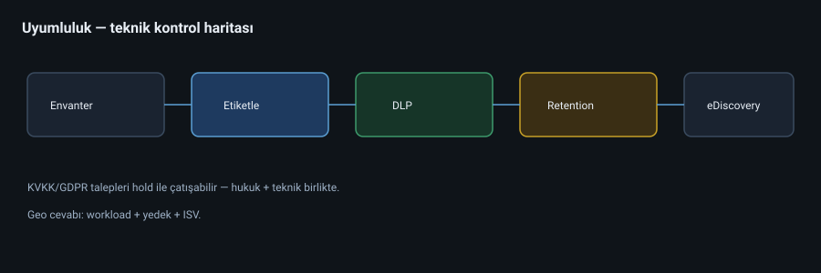
diyagramlar/14-uyumluluk-kontrolleri.svg
14.3 Veri konumu (geo)
Tenant oluşturulurken seçilen coğrafya
Multi-Geo (büyük kurumlar)
Yedek / üçüncü parti yedekleme araçlarının konumu
Graph uygulama loglarının nereye gittiği
Soru: “Verimiz Avrupa’da mı?” cevabı sadece marketing cümlesi olmamalı; workload + yedek + ISV üçlüsü yazılmalı.
14.4 Retention vs silme hakkı gerilimi
Hukuki hold / mali saklama süreleri ile “silinmesini istiyorum” talebi çatışabilir.
Operasyon kuralı: Hold varsa silme talebi otomatik yerine getirilmez; süreç hukukla yürür.
14.5 eDiscovery pratik notları
Content Search vs eDiscovery (Standard/Premium) farkını bilin
Custodian (velayet) modeli
Hold’un kullanıcı deneyimine etkisi (silinemeyen öğeler)
Dışa aktarım zinciri ve kimlerin erişeceği
14.6 Case Study 14-A — Forms’ta TC kimlik
Açık Forms ile TC toplandı; bağlantı şirket dışı paylaşıldı.
Kontroller: Forms dış paylaşım politikası, DLP, bilgilendirme metni, minimum veri.
14.7 Case Study 14-B — “Hepsini 10 yıl sakla”
IT her şeyi sınırsız sakladı; maliyet + ihlal yüzeyi büyüdü.
Düzeltme: İş + hukuk ile saklama matrisi (mail 7 yıl, sohbet 1 yıl, vb. — örnek rakamlar kurumunuza göre değişir).
14.8 Laboratuvar 14
KuzeyLojistik için 6 veri türü × sistem × saklama süresi tablosu yapın.
Bir silme talebi geldiğinde teknik adımları yazın (hold kontrolü dahil).
Misafir ve ISV uygulamalarını “aktarım” riski diye listeleyin.
14.9 Kontrol listesi
[ ] PII’nin M365’te nerelerde yaşadığını haritaladım
[ ] Retention / hold gerilimini açıklayabiliyorum
[ ] Geo cevabını üç parçalı (workload/yedek/ISV) veriyorum
Sonraki: Bölüm 15 — İzleme, raporlama ve hizmet sağlığı 14.10 Derinleşme: Veri haritası şablonu
Veri türü Sistem Hukuki gerekçe (İK doldurur) Saklama Erişim grubu Dış aktarım? Özlük SPO-HR ... ... SG-HR Hayır Müşteri sözleşme SPO-Legal ... ... SG-Legal Misafir avukat Destek mail EXO shared ... ... Destek Bazen
Bu tablo olmadan DLP kuralları rastgele ateş eder.
Bölüm 15 — İzleme, Raporlama ve Hizmet Sağlığı
15.1 Uzman kör noktası
Tenant’ı kurup izlememek, arabayı farları kapalı sürmektir. İzleme katmanları:
Microsoft 365 Service Health — platform kesintisi mi, sizin yapılandırmanız mı?Kullanım raporları — lisans israfı, aktiflikGüvenlik sinyalleri — Defender, Identity Protection, Secure ScoreAudit / bilgilendirme — kim ne değiştirdiÖzel Graph raporları — sizin KPI’larınız
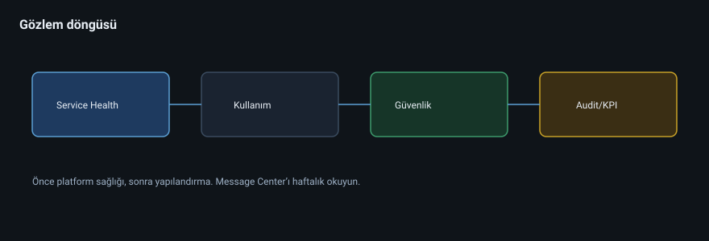
diyagramlar/15-gozlem-dongusu.svg
15.2 Service Health ve Message Center
admin.microsoft.com → Health
Kesintide önce Service Health bakın; gereksiz “DNS’i bozdum” paniğini önler
Message Center: yaklaşan değişiklikler (retiring features)
Ritim: Haftalık Message Center tarama + kritik etkilenen iş yüklerini işaretleme.
15.3 Kullanım ve benimsenme
Rapor örnekleri:
Email activity
Teams active users / device usage
OneDrive/SharePoint aktif dosyalar
Yammer/Viva (varsa)
Yorumlama: Düşük Teams kullanımı = kötü ürün değil; eğitim / network / politika engeli olabilir.
15.4 Güvenlik gözlemi
Kaynak Ne ararsınız Sign-in logs İmkânsız seyahat, legacy protocol Risky users Identity Protection Threat Explorer Phishing kampanyaları Audit Role / CA / sharing değişiklikleri Secure Score Trend (mutlak skor değil)
15.5 Alert politikaları (başlangıç seti)
Anonymous link creation spike
Mass download / unusual file activity (lisansa göre)
New inbox rule on executive mailboxes
Elevation to privileged role
Antiphish / malware bursts
15.6 Case Study 15-A — Yanlış teşhis
Kullanıcılar Outlook’a giremiyor; IT DNS’i değiştiriyor. Aslında bölgesel EXO olayı.
Ders: Service Health → kullanıcı etkisi → sonra config.
15.7 Case Study 15-B — Sessiz lisans sızıntısı
Ayda 40 lisans “atanmış ama hiç giriş yok”. Graph raporu olmadan kimse görmedi.
Kalıcı: Aylık inactive license job + yönetici özeti.
15.8 Laboratuvar 15
Service Health’i açıp son 7 günü özetleyin.
3 kullanım raporu ekranını yorumlayın.
5 maddelik alert listesini tenant’ınıza uyarlayın.
Graph ile “30 gündür sign-in yok” kullanıcısı sorgusu tasarlayın.
15.9 Kontrol listesi
[ ] Platform vs yapılandırma ayrımını yapabiliyorum
[ ] Haftalık Message Center alışkanlığım var
[ ] En az 5 güvenlik/operasyon alarmı tanımladım
Sonraki: Bölüm 16 — Sık sorulan mülakat / savunma soruları 15.10 Derinleşme: Yönetici tek sayfa KPI
Aylık tek sayfa:
Servis olayları (bizim / Microsoft)
Aktif kullanıcı trendi
Lisans israf adayı
Phishing / quarantine özeti
Oversharing trendi
Açık IR sayısı
Bir sonraki ayın değişiklikleri (Message Center)
Bölüm 17 — Ağ, Bağlantı ve İstemci Performansı
17.1 Neden ağ, M365 kitabında?
“Outlook yavaş”, “Teams ses kesiliyor”, “OneDrive sync takılıyor” ticket’larının önemli kısmı tenant ayarı değil, ağ yoludur . Uzman, Service Health ile proxy/firewall/DNS ayrımını yapar.
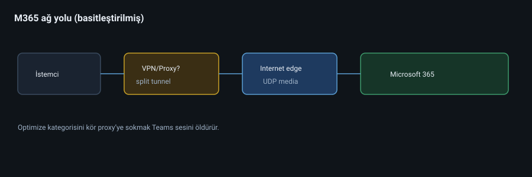
diyagramlar/17-m365-ag-yolu.svg
17.2 Temel ilkeler
Microsoft 365 trafiğini kırıp SSL inspection ile boğmayın (özellikle Teams media / bazı uçlar).Optimize / allow list URL ve IP’leri kategorize edin (Microsoft’un yayınladığı endpoint listeleri).DNS çözümlemesi doğru coğrafyaya gitsin (lokal DNS, yanlış forwarder).UDP ses/görüntü için kritik; sadece TCP’ye düşmek kaliteyi öldürür.Split tunneling VPN senaryolarında M365 için sık önerilir (kurum politikasına göre).
17.3 Endpoint kategorileri (kavramsal)
Kategori Örnek etki Optimize Teams media — en hassas Allow Auth, Exchange, SPO Default Daha az kritik
Firewall ekibi “hepsini proxy’ye” derse işbirliği bozulur. M365 admin olarak endpoint gerekçesini anlatabilmelisiniz.
17.4 Teams medya yolu
İstemci → UDP (SRTP) → Microsoft edge → karşı uç
Semptomlar:
Robot ses / tek yönlü ses → UDP / NAT / QoS
Toplantıya giremiyor ama sohbet çalışıyor → media vs signaling ayrımı
VPN açıkken bozuk, kapalıyken iyi → split tunnel adayı
Araçlar: Teams çağrı kalitesi / Call Analytics, Experience Insights (lisansa göre), netstat/packet capture (ileri).
17.5 Exchange / Outlook bağlantısı
Modern Authentication zorunlu
MAPI over HTTP
Autodiscover sorunları (Bölüm 4)
Conditional Access seçici → eski Outlook istemcileri kırılabilir (sürüm politikası)
17.6 Proxy, PAC ve SSL inspection tuzakları
PAC dosyası M365’i yanlışlıkla proxy’ye gönderir
SSL inspection sertifika pin kırar / gecikme ekler
Çift NAT + uzun path → timeout’lar
17.7 IPv6, MTU, QoS
MTU/fragment sorunları nadir ama inatçı
QoS DSCP işaretleme (Wi-Fi/kablolu) ses için değerli
Ev kullanıcılarında Wi-Fi kanal kalitesi “bulut sorunu” sanılır
17.8 Case Study 17-A — Proxy her şeyi yutuyor
KuzeyLojistik tüm HTTPS’i proxy’den geçirdi; Teams toplantıları çöktü.
Çözüm: Optimize kategorisini bypass; ölçümle doğrula; güvenlik istisnasını belgele.
17.9 Case Study 17-B — VPN split tunnel yok
Uzaktan çalışanlar VPN’e zorunlu; EXO gecikmesi 400ms+.
Çözüm: M365 split tunnel + CA ile cihaz uyumu devam.
17.10 Laboratuvar 17
Tenant’ınız için (veya örnek) 10 kritik URL/IP kategorisini tabloya dökün.
“Teams ses kesik” için 6 adımlık teşhis ağacı yazın.
VPN senaryosunda split tunnel artı/eksi listesi çıkarın.
Service Health vs ağ ayrımı için karar tablosu yapın.
17.11 Kontrol listesi
[ ] Optimize/Allow ayrımını açıklayabiliyorum
[ ] UDP’nin Teams için neden kritik olduğunu savundum
[ ] SSL inspection istisna gerekçemi yazdım
[ ] VPN + CA birlikte düşünülüyor
Sonraki: Bölüm 18 — Hibrit kimlik derinlemesine
Bölüm 18 — Hibrit Kimlik: Entra Connect / Cloud Sync
18.1 Ne zaman hibrit?
On-prem Active Directory hâlâ authoritative ise (eski uygulamalar, GPO, dosya sunucusu ACL) kimlikler çoğu zaman senkron edilir.
Araç Ne zaman Entra Connect Sync Klasik, zengin özellik, sunucu tabanlı Entra Cloud Sync Hafif agent, bazı senaryolar için daha modern/basit Federation (AD FS) Özel gereksinim; çoğu yeni tasarımda kaçınılır
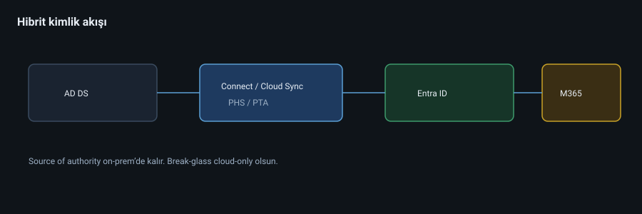
diyagramlar/18-hibrit-kimlik.svg
18.2 Sync motorunun zihinsel modeli
AD DS → (Connect) → Entra ID → M365 iş yükleri
Source of authority: Buluta doğrudan değiştiremeyeceğiniz alanlar vardır (synced user’da UPN vs.).Soft delete / recycle bin davranışları
OU filtering: hangi OU’lar sync edilecek
Attribute filtering / transformations
18.3 Kimlik doğrulama yöntemleri (hibrit)
Yöntem Açıklama Password Hash Sync (PHS) Hash sync; önerilen varsayılan birçok senaryoda Pass-through Auth (PTA) On-prem agent ile anlık doğrulama Federation Token AD FS vb. üzerinden
PHS + Seamless SSO sık tercih. PTA’da agent yüksek erişilebilir olmalı.
18.4 Seamless SSO ve hybrid join
Hybrid Azure AD Join / Entra hybrid join: cihaz hem AD hem Entra’da
SSO deneyimi intranet’te
CA compliant cihaz sinyali Intune ile birleşir
18.5 Yaygın kırılmalar
Senkron hesabı parola değişti, sync durdu
UPN suffix domain Entra’da doğrulanmamış
Duplicate proxyAddresses → sync error
OU filter yanlış → kullanıcılar gelmedi
Soft match / hard match hataları (mail nickname)
Connect sunucusu yama sonrası SQL/LocalDB sorunu
Teşhis: Synchronization Service Manager, Connect Health, Entra provisioning logs.
18.6 Güvenlik
Connect sunucusu Tier 0 gibi korunur
PHS ile buluta giden hash’ler hakkında yönetime doğru anlatım (mitosları düzeltin)
Cloud-only break-glass hesapları sync dışı
Admin hesaplarını mümkünse bulut tarafında ayrı düşünün (synced admin riski)
18.7 Staging mode ve yükseltme
İkinci Connect sunucusu staging mode’da hazır
Felaket / yükseltmede hızlı kesiş
Cloud Sync’e geçiş değerlendirmesi: özellik matrisi okunmadan “yenisi iyi” demeyin
18.8 Case Study 18-A — Sync durdu, kimse fark etmedi
3 gün sync kapalı; yeni işe girenler M365’e gelmedi.
Düzeltme: Connect Health alert + NOC runbook + günlük “last success” metriği.
18.9 Case Study 18-B — Soft match ile yanlış kullanıcı birleşti
Aynı SMTP yüzünden cloud trial kullanıcısı on-prem ile birleşti; izinler karıştı.
Ders: Migrasyon öncesi identity matching planı; hard match (ImmutableId) bilinçli.
18.10 Laboratuvar 18
Cloud-only vs PHS vs PTA karar matrisi (5 kriter puanlayın).
Sync hata senaryosu için 8 adımlık IR yazın.
Break-glass’ın sync dışında kalmasını nasıl garanti edersiniz?
OU filter değişikliğinin risklerini listeleyin.
18.11 Kontrol listesi
[ ] Source of authority’yi açıklayabiliyorum
[ ] PHS/PTA/Federation farkını savundum
[ ] Connect sunucusunu Tier 0 gibi koruyacağım
[ ] Alert olmadan sync ölümünü kabul etmiyorum
Sonraki: Bölüm 19 — Yedekleme, DR ve fidye yazılımı
Bölüm 19 — Yedekleme, Felaket Kurtarma ve Fidye Yazılımı
19.1 “Microsoft yedekliyor” miti
Microsoft hizmet sürekliliği ve kendi yedekleme/replicasyonu ile platformu korur. Bu, sizin:
yanlışlıkla silmenizi,
fidye yazılımının şifrelemesini,
kötü niyetli admin’in toplu silmesini,
uzun süreli hukuki arşiv ihtiyacınızı
otomatik çözmez. Retention ≠ backup. Hold ≠ full workload restore senaryosu her zaman.
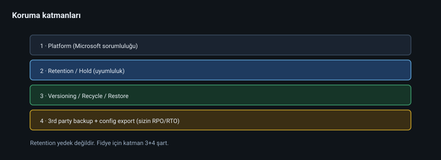
diyagramlar/19-yedek-katmanlari.svg
19.2 Ne korunmalı?
İş yükü Risk Tipik ek kontrol Exchange mailbox Soft delete / purge Retention, litig hold, 3rd party backup OneDrive/SPO Ransomware encrypt Versioning, recycle, restore, backup ürünü Teams Chat/files karma SPO/EXO alt katman + vendor Entra config Politikaların silinmesi Config export / IaC Intune politikaları Yanlış deploy Export / versiyon kontrol
19.3 SharePoint / OneDrive fidye senaryosu
Belirtiler: toplu uzantı değişimi, mass modify.
Cevap:
Kullanıcıyı izole et (hesap/cihaz)
Version history / library restore
File history restore pencereleri
Üçüncü parti backup’tan point-in-time
IR + root cause (token çalındı mı?)
19.4 Retention ve backup birlikte
Retention: uyumluluk / düzen
Backup: operasyonel geri dönüş (granüler, farklı tehdit modeli)
İkisini karıştırmak maliyet veya boş güvenlik duygusu yaratır
19.5 Config as code / export disiplini
En azından düzenli export:
CA politikaları
Exchange transport rules
Intune configuration profiles (mümkün olduğunca)
Conditional Access JSON
Felaket: yanlış CA ile herkesi kilitlemek → break-glass + bilinen iyi config.
19.6 RPO / RTO konuşması (iş dili)
Yönetime sorun:
Bir mailbox için kabul edilen veri kaybı (RPO)?
Ne kadar sürede dönmeli (RTO)?
Tüm SPO’nun geri gelmesi mi, tek site mi?
Cevapsız backup ihaleleri boşa gider.
19.7 Case Study 19-A — Crypto on OneDrive
Satış temsilcisinin PC’si ele geçti; OneDrive sync şifreledi. Versioning 30 gün kurtardı; 45 günlük dosyalar üçüncü parti backup’tan geldi.
Ders: Versioning tek başına SLA yetmeyebilir.
19.8 Case Study 19-B — Admin yanlışlıkla site sildi
Site collection silindi; recycle pencereleri yetişti. Süreç belgesizdi; 6 saat panik.
Düzeltme: Silme yetkisi kısıt + onay + backup + runbook.
19.9 Laboratuvar 19
KuzeyLojistik için RPO/RTO tablosu (mail, OD, SPO, Teams).
Retention vs backup farkını yöneticiye 5 cümlede anlatın.
Fidye için OneDrive/SPO müdahale kartı yazın.
Hangi config’leri haftalık export edeceğinizi listeleyin.
19.10 Kontrol listesi
[ ] “Microsoft yedekliyor” mitini çürüttüm
[ ] RPO/RTO sordum
[ ] Versioning + recycle + backup katmanlarını ayırdım
[ ] Config export disiplinim var
Sonraki: Bölüm 20 — Olay müdahale runbook’ları
Bölüm 20 — Olay Müdahale (IR) Runbook’ları
20.1 IR’nin M365’teki yeri
Güvenlik ürünü almak ≠ müdahale edebilmek. Runbook; panik anında sırayı verir.
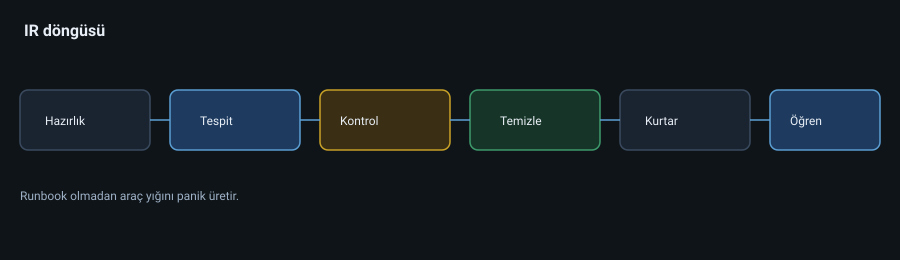
diyagramlar/20-ir-dongusu.svg
Genel döngü: Hazırlık → Tespit → Kontrol altına alma → Yok etme → Kurtarma → Ders çıkarma
20.2 Roller
Rol Görev Incident Commander Karar ve iletişim Identity lead Hesap/revoke/CA Messaging lead Mail purge / rule Endpoint lead Intune izolasyon Comms Yönetim / kullanıcı mesajı Legal/HR Gerektiğinde
Küçük ekipte bir kişi birden fazla şapka takar; yine de şapkaları isimlendirin.
20.3 Runbook A — Hesap ele geçirme (account takeover)
Tetik: Impossible travel, atypical token, kullanıcı bildirimi, MFA fatigue.
Adımlar:
Sign-in log + risky sign-in kanıtı al (ekran/CSV)
revokeSignInSessions + refresh token düşürmeParola reset / TAP + MFA yöntemlerini gözden geçir (agresör Authenticator eklemiş olabilir!)
Inbox rules / forwarding kontrol (EXO)
MFA fraud / authentication methods temizliği
OAuth uygulama consent gözden geçir
Cihaz uyumu / Intune mark as noncompliant gerekirse
İletişim: kullanıcıya kontrollü bilgi
Post-incident: CA güçlendir, legacy kapat
20.4 Runbook B — BEC / CEO fraud
Mesajı Threat Explorer’da bul
Benzerleri seç + purge/ZAP
Hedef mailbox kuralları
Finans sürecini durdur (iş kontrolü)
DMARC/anti-phish boşluk analizi
Typosquat domain takibi (dış)
20.5 Runbook C — Toplu dosya şifreleme / silme
Kullanıcı/cihaz izole
SPO/OD restore seçenekleri değerlendir
Audit: kim, hangi app, hangi IP
Token/app abuse?
Backup’a geçiş kriteri
20.6 Runbook D — Yanlış CA ile kilitlenme
Break-glass ile gir
Politika report-only / disable
Etkilenen seti doğrula
Değişiklik kaydı + iletişim
Neden review kaçtı? (change window yok)
20.7 Kanıt ve zincir
Zaman dilimi (UTC vs local) notu
Export’ların hash/integrity ihtiyacı (ileri adli)
Ticket numarası ile runbook adımı eşle
20.8 Masa tatbikatı (tabletop)
Çeyrekte bir: “CFO’ya phishing, EFT istedi” senaryosunu saatsiz konuşun. Boşlukları runbook’a yazın.
20.9 Case Study 20-A — MFA yöntemini saldırgan ekledi
Revoke yapıldı ama Authenticator’da saldırgan device kaldı; tekrar girdi.
Ders: Authentication methods temizliği unutulmamalı.
20.10 Laboratuvar 20
Runbook A’yı tek sayfalık “acil kart”a indirgeyin.
Break-glass testini planlayın (ne sıklıkla, nasıl alarm).
BEC için finans ekibiyle 5 maddelik süreç kontrolü yazın.
Tabletop daveti taslağı hazırlayın.
20.11 Kontrol listesi
[ ] 4 temel runbook taslağım var
[ ] Revoke + auth methods birlikte düşünülüyor
[ ] Break-glass tatbikatı planlandı
[ ] İş kontrolleri (finans) IR’nin parçası
Sonraki: Bölüm 21 — Viva, benimseme ve değişim
Bölüm 21 — Benimseme, Değişim Yönetimi ve Viva
21.1 Teknik başarı ≠ iş başarısı
M365’i açmak kolaydır; insanların doğru yerde, doğru alışkanlıkla çalışması zordur. Bu bölüm “yumuşak” görünür; uzmanlık farkı burada oluşur.
21.2 Benimseme çerçevesi
Sponsor: Yönetim görünür destekŞampiyon ağı: Her departmandan 1–2 kişiSenaryo tabanlı eğitim: “Word nedir?” değil “Teklifi nasıl birlikte yazarız?”Eski sistem kapanış tarihi: File share / Skype / paralel yapılarÖlçüm: Kullanım + nitel geri bildirimGeri bildirim döngüsü: Politika acıtıyorsa düzelt
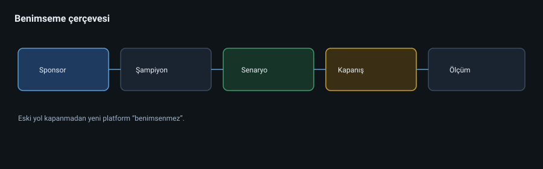
diyagramlar/21-benimseme-cercevesi.svg
21.3 Viva ailesi (yönetici bakışı)
Modül Odak Not Viva Engage Topluluk / sohbet Yammer evrimi Viva Learning Öğrenme İçerik kaynakları Viva Insights Refah / verimlilik sinyalleri Gizlilik hassas Viva Connections Intranet girişi SharePoint ile Viva Topics / diğer Bilgi keşfi Lisans/ürün değişebilir
Ürün adları zamanla değişir; iş problemi → çözüm eşlemesi kalıcıdır.
21.4 Değişim iletişim şablonu
Ne değişiyor?
Neden şimdi?
Sizin için fayda?
Ne yapmanız gerekiyor? (3 adım)
Nereden yardım alırsınız?
Eski yöntem ne zaman kapanıyor?
21.5 Direnç türleri ve cevaplar
Direnç Kötü cevap İyi cevap “Eski paylaşım daha hızlı” Zorunlu kıl, anlatma Senaryo demo + arama avantajı “Teams karmaşık” Daha çok eğitim videosu Şablon team + az kanal “Güvenlik işi yavaşlatıyor” Umursama Risk hikâyesi + istisna süreci
21.6 Case Study 21-A — Paralel evren
IT Teams’i açtı; muhasebe hâlâ e-posta eki + USB. 8 ay sonra “benimsenmedi” dendi.
Kök neden: Eski yol kapanmadı, şampiyon yok, senaryo eğitimi yok.
21.7 Case Study 21-B — Aşırı politika
GIF kapalı, her toplantı lobili, dış paylaşım yok → kullanıcılar WhatsApp’a kaçtı.
Ders: Güvenlik + kullanılabilirlik dengesi; gölge IT daha tehlikeli olabilir.
21.8 Laboratuvar 21
3 senaryolu eğitim outline’ı yazın (ofis, saha, yönetici).
Şampiyon ağı için 1 sayfalık görev tanımı.
Eski file share kapanış iletişim metni.
5 benimsenme metriği seçin (vanity metric olmayan).
21.9 Kontrol listesi
[ ] Kapanış tarihi olmayan göçü göç saymıyorum
[ ] Şampiyon modeli tasarladım
[ ] Güvenlik vs kullanılabilirlik trade-off’unu yönetime anlatabiliyorum
Sonraki: Bölüm 10 — Case study derlemesi (genişletilmiş) veya Capstone
Bölüm 16 — Mülakat ve Capstone Savunma Soruları
Her soruya kısa cevap + derinleşme + tuzak formatında bakın.
S1. Microsoft 365 nedir?
Kısa: Kimlik odaklı bulut üretkenlik ve işbirliği platformu (SaaS + güvenlik/uyumluluk).
Tuzak: “Sadece Office uygulamaları” demeyin.
S2. Tenant ile domain farkı?
Kısa: Tenant mantıksal kiracıdır; domain onun kimlik/mail ad alanıdır. Bir tenant’ta birden fazla domain olabilir.
S3. Neden herkese Global Admin vermeyiz?
Kısa: Blast radius. En az yetki + PIM + break-glass.
S4. Security group ile M365 group farkı?
Kısa: İlki erişim nesnesi; ikincisi işbirliği (mail/site/Teams) nesnesi.
S5. Shared mailbox’a neden parola vermeyiz?
Kısa: Etkileşimli giriş yüzeyi açılır; MFA/CA zayıf kalabilir. Full Access ile eklenir.
S6. Conditional Access nedir?
Kısa: Sinyallere göre oturum için MFA / engel / oturum kontrolü uygulayan politika motoru.
S7. Zero Trust’ı bir cümleyle?
Kısa: Asla güvenme, sürekli doğrula — kimlik, cihaz, oturum, veri.
S8. Anyone link riski?
Kısa: Bağlantıyı bilen herkes; indekslenme / sızıntı. TTL + disable / DLP.
S9. Teams dosyası nerede durur?
Kısa: Kanal dosyaları SharePoint’te; 1:1 sohbet OneDrive’da. Private kanal ayrı site olabilir.
S10. DLP’yi neden hemen enforce etmeyiz?
Kısa: False positive işi durdurur; staging ile ayarlanır.
S11. Graph app-only ne zaman?
Kısa: Kullanıcısız zamanlanmış işler; admin consent + en az yetki + sertifika.
S12. Hibrit neden “sonsuz” olmamalı?
Kısa: Operasyon maliyeti; köprü için çıkış tarihi koyun.
S13. Copilot güvenliği nerede başlar?
Kısa: İzin ve oversharing hijyeninde; model sihirli duvar değildir.
S14. Offboarding’de ilk 3 iş?
Kısa: Disable / revoke sessions → veri sahipliği (OneDrive/mailbox) → erişim temizliği.
S15. Secure Score %100 hedef mi?
Kısa: Hayır; önceliklendirme listesi. İş etkisine göre seçin.
Capstone jüri simülasyonu (10 dk)
Mimarinizi 90 saniyede anlatın.
En pahalı kararınız hangisi, neden?
En büyük riskiniz ve telafiniz?
Lab’da kırdığınız bir şeyi ve nasıl geri aldığınızı anlatın.
Sonraki: Ek D — PowerShell / Graph reçete defteri
Bölüm 10 — Gerçek Hayat Case Study Derlemesi
Bu bölüm, kitaptaki vakaları çözüm çerçevesiyle bir araya getirir. Her case için aynı şablonu kullanın:
Bağlam
Belirti
Kök neden
Kısa vadeli tespit
Kalıcı düzeltme
Ölçüt (KPI)
Kitaptaki bölüm bağlantısı
CS-01 — Lisans israfı ve görünmezlik
Bağlam: 180 kişi, herkese E5.
Belirti: Maliyet / kullanıcı oranı sektörün 2 katı.
Kök neden: Persona analizi yok.
Tespit: Graph ile lisans kullanım raporu; son 30 gün Teams/EXO aktivitesi.
Kalıcı: Persona matrisi + aylık lisans review.
KPI: Kullanılmayan lisans < %5.
Bölüm: 2, 8
CS-02 — Global Admin kalabalığı
Bağlam: 8 Global Admin.
Belirti: Yanlışlıkla CA silindi.
Kök neden: Rol hijyeni yok.
Tespit: Directory role atamaları envanteri.
Kalıcı: Granüler roller + PIM + 2 break-glass.
KPI: Sürekli Global Admin = 2 (break-glass).
Bölüm: 3, 7
CS-03 — Shared mailbox ele geçirme
Bağlam: Destek@ hesabına parola verilmiş.
Belirti: Spam çıkışı, müşteri şikâyeti.
Kök neden: Shared mailbox’a sign-in.
Tespit: Sign-in logs + mailbox audit.
Kalıcı: Sign-in disable, Full Access, CA, audit.
KPI: Shared hesaplarda interactive sign-in = 0.
Bölüm: 4, 7
CS-04 — Anyone link sızıntısı
Bağlam: Teklif PDF’leri public link.
Belirti: Arama motorunda içerik.
Kök neden: Sharing politikası gevşek + eğitim yok.
Tespit: Sharing raporları, Cloud App / audit.
Kalıcı: Anyone kısıtı, expiry, label, DLP.
KPI: Anyone link sayısı haftalık düşüş.
Bölüm: 5, 7
CS-05 — Teams enflasyonu
Bağlam: 800 team, %60 inaktif.
Belirti: Dosya bulunamıyor, misafir karmaşası.
Kök neden: Self-service limitsiz.
Tespit: Last activity raporu.
Kalıcı: Naming, expiration, archive, template.
KPI: Aktif team oranı > %70.
Bölüm: 6
CS-06 — CEO fraud (BEC)
Bağlam: Typosquat domain ile EFT talebi.
Belirti: Muhasebe şüpheli mail.
Kök neden: DMARC yok + süreç kontrolü yok + anti-phish zayıf.
Tespit: Header analizi, Threat Explorer.
Kalıcı: DMARC reject, impersonation koruması, sözlü teyit süreci.
KPI: BEC’nin finans sürecini aşma oranı = 0.
Bölüm: 4, 7
CS-07 — DLP’nin işi kilitlemesi
Bağlam: Enforce DLP false positive.
Belirti: Dış mail durdu.
Kök neden: Test modu atlandı.
Tespit: DLP match raporları.
Kalıcı: Staging → tune → enforce; istisna yolu.
KPI: False positive < kabul eşiği.
Bölüm: 7
CS-08 — CSV migrasyon / provision hatası
Bağlam: Toplu kullanıcı açılışı.
Belirti: Yanlış UPN domain.
Kök neden: Doğrulama yok, pilot yok.
Tespit: Örnekleme + Get-MgUser.
Kalıcı: Schema validator + pilot dalga.
KPI: Provision hata oranı < %1.
Bölüm: 8, 9
CS-09 — Sonsuz hibrit
Bağlam: 12 mailbox için on-prem Exchange.
Belirti: Yüksek bakım.
Kök neden: Migrasyon yarım kaldı.
Kalıcı: Son dalga + hibrit kaldırma.
KPI: On-prem mailbox = 0.
Bölüm: 9
CS-10 — Offboarding sızıntısı
Bağlam: İşten çıkan satışçı.
Belirti: Eski OneDrive linkleri hâlâ açık; mobil oturum canlı.
Kök neden: Offboarding runbook eksik.
Kalıcı: Disable → session revoke → lisans → OneDrive transfer → grup/Teams → mailbox forward → audit.
KPI: Offboarding SLA < 4 saat.
Bölüm: 3, 5, 8, Capstone
Nasıl pratik yapılır?
Her CS için bir sayfalık “yönetici brifingi” yazın: yönetime 3 dakikada anlatılacak dilde. Teknik jargon yerine risk → etki → öneri .
Detaylı dosyalar
Bazı case’ler ayrıntılı paket olarak genişletildi:
Ödev: Kalan 6 case için aynı şablonla detay dosyası üretin.
Bölüm 11 — Capstone: 500 Kişilik Şirketi Sıfırdan Kur
Proje özeti
Kurum: KuzeyLojistik A.Ş. (büyüme senaryosu)
Kullanıcı: 500 (300 ofis, 150 saha, 50 yönetici/ID)
Hedef: 8 haftalık öğrenim sonunda savunulabilir bir M365 tasarım paketi teslim etmek.
Bu bir “tenant’ı gerçekten kur” projesi olabilir (developer tenant) veya tasarım + lab kanıtı projesi olabilir. İkisinde de teslimat aynıdır.
Teslimat paketi (zorunlu)
Tek sayfa referans mimari (diyagram)Persona × lisans matrisi Kimlik ve CA politikaları listesi (en az 5 politika taslağı)Exchange DNS ve alıcı tasarımı (shared, room, naming)SharePoint bilgi mimarisi (hub + 5 site + izin modeli)Teams governance (naming, expiration, meeting policy)Purview label taksonomisi + 2 DLP kuralı (test modu planı)Onboarding ve offboarding runbook (PowerShell/Graph adımlarıyla)Migrasyon / büyüme dalga planı (eğer kaynak sistem varsayıyorsanız)Risk kaydı (en az 8 risk: olasılık × etki × önlem)Yönetici özeti (1 sayfa, işletme dili)
Haftalık sprint önerisi
Sprint Çıktı 1 Mimari + persona + lisans 2 Entra + CA taslakları + lab kanıtı 3 Exchange + DNS + shared/room lab 4 SPO/OneDrive bilgi mimarisi 5 Teams governance 6 Güvenlik & Purview 7 Otomasyon runbook’ları 8 Risk, özet, sözlü savunma
Sözlü savunma soruları (hoca / mentor)
Neden herkese E5 demediniz?
Break-glass’ı CA’dan neden muaf tuttunuz; nasıl izliyorsunuz?
Saha çalışanının verisi OneDrive’da mı, Teams’te mi, neden?
Misafir danışman bir proje kanalında neyi görmemeli?
DLP false positive olursa iş nasıl devam eder?
Offboarding’de oturumları nasıl düşürürsünüz?
Başarı ölçütleri
Ölçüt Geçer Tüm zorunlu teslimatlar Eksiksiz Lab kanıtı (ekran / log / script çıktısı) ≥ 6 Case study bağlantısı ≥ 3 CS’ye atıf Çelişkisiz kararlar Lisans ↔ CA ↔ sharing hizalı Güvenlik regresyonu yok Anyone + legacy auth kapalı veya gerekçeli
Not
Capstone’u bitirdiğinizde yalnızca “M365 kullanan” değil, M365’i tasarlayan olursunuz. Kariyer ekleri için EK-B-sertifika-kariyer.md dosyasına bakın.
Genişletilmiş rubrik (detaylı değerlendirme)
Kriter 0 1 2 Mimari bütünlük Parçalı Tutuyor ADR’li savunulabilir Kimlik/CA Eksik Temel Katalog + istisna İş yükleri Yüzeysel İyi Governance’lı Güvenlik/uyumluluk Yok DLP/label var Test→enforce + IR Otomasyon Yok Script Runbook+idempotent Benimseme Yok Eğitim notu Şampiyon+kapanış Anlatım Teknik jargon Anlaşılır CFO+SOC dilinde
Minimum geçer: toplam ≥ 10/14 ve hiçbir kritik kriterde 0 yok.
Ek A — Sözlük
Terim Kısa anlam Tenant Kurumun M365 yalıtılmış alanı Entra ID Bulut kimlik dizini UPN Kullanıcı giriş adı RBAC Role-based access control PIM Privileged Identity Management CA Conditional Access MFA Çok faktörlü kimlik doğrulama B2B Misafir / partner kimliği EXO Exchange Online SPO SharePoint Online M365 Group İşbirliği grubu (mail+site+Teams) Shared mailbox Ortak posta kutusu EOP Exchange Online Protection DLP Data Loss Prevention Sensitivity label Veri sınıflandırma etiketi Retention Saklama politikası eDiscovery Hukuki / inceleme araması Graph Microsoft Graph API Intune Uç nokta yönetimi Hybrid On-prem + bulut birlikte Break-glass Acil durum admin hesabı Secure Score Güvenlik iyileştirme skoru DNS MX/SPF/DKIM/DMARC Posta teslim ve kimlik doğrulama kayıtları Workload Exchange, Teams, SPO gibi iş yükü App-only Uygulama kimliğiyle API erişimi Autopilot Windows bulut provision MAM / MDM Uygulama / cihaz yönetimi PHS / PTA Password hash sync / pass-through auth GDAP Granular partner admin yetkisi RPO / RTO Kurtarma noktaları / süreleri ZAP Zero-hour auto purge (mail) BEC Business Email Compromise ADR Architecture Decision Record ESP Enrollment Status Page Split tunneling VPN’de seçici trafik ayrımı Soft match Mail ile kimlik birleştirme ImmutableId Hard match anahtarı Call Analytics Teams çağrı kalitesi Message Center M365 değişiklik duyuruları Oversharing Aşırı / yanlış paylaşım
Ek B — Sertifika ve Kariyer Haritası
Bu kitap bir sertifika kursu değildir; ama kariyer yolunu netleştirir.
Önerilen öğrenim → sınav hizası
Seviye Odak Tipik sınav / rol Acemi Temel tenant, kullanıcı, lisans MS-900 (temel) Orta İş yükleri yönetimi MS-102 (admin) Kimlik Entra, CA SC-300 Güvenlik Defender / güvenlik ops SC-200 / ilgili Uyumluluk Purview SC-400 Uzman pratik Mimari + otomasyon Rol: M365 Architect / Engineer
Sınav kodları zamanla değişir; güncel Microsoft Learn sayfasını kontrol edin. Kitaptaki kavramlar sınavdan bağımsız olarak işe yarar.
Rol örnekleri
Microsoft 365 Administrator Identity Engineer (Entra) Collaboration Engineer (Teams/SPO) Security Analyst (Defender/Purview) Cloud Ops / Automation Engineer
Portföy için 5 kanıt
Capstone paketiniz (mimari + runbook)
Graph/PowerShell ile ürettiğiniz bir rapor betiği
CA politikası tasarım notu
Bir case study brifingi (CS-01…CS-10)
Lab ekran çıktıları (hassas veri olmadan)
Ek C — Portal ve Komut Hızlı Referans
Portallar
URL (kavramsal) İş admin.microsoft.com Genel yönetim entra.microsoft.com Kimlik admin.exchange.microsoft.com Posta admin.teams.microsoft.com Teams admin.sharepoint.com SharePoint security.microsoft.com Defender compliance.microsoft.com Purview intune.microsoft.com / endpoint.microsoft.com Cihaz developer.microsoft.com/graph/graph-explorer API keşif
Sık PowerShell girişleri
# Graph
Connect-MgGraph -Scopes "User.Read.All","Group.Read.All"
Get-MgUser -All | Select-Object DisplayName, UserPrincipalName
# Exchange Online
Connect-ExchangeOnline
Get-EXOMailbox -ResultSize 10
Enable-Mailbox -Identity user@contoso.com -Archive
# Takım / grup üyeliği raporları için bu repodaki örnekler:
# ExportM365GroupMembership/M365GrMembExp.ps1
# EnableInPlaceArchive/EnableInPlaceArchive.ps1
Onboarding mini checklist
Hesap oluştur (doğru UPN)
Lisans ata (persona)
Gruplara ekle
MFA / CA kapsamını doğrula
Mailbox / OneDrive hazır mı bak
Hoş geldin iletişimi
Offboarding mini checklist
Hesabı disable et / oturumları revoke et
Lisansları kaldır (veri işleri bitince)
OneDrive sahiplik transferi
Mailbox convert / forward / shared kararı
Grup ve Teams üyeliklerinden çıkar
Uygulama & cihaz erişimini gözden geçir
Audit kaydı tut
Ek D — PowerShell / Graph Reçete Defteri
Uyarı: Örnekler eğitim amaçlıdır. Production’da scope, WhatIf, pilot ve change window kullanın.
D.1 Bağlantılar
# Microsoft Graph (etkileşimli)
Connect-MgGraph -Scopes "User.Read.All","Group.Read.All","Directory.Read.All","Organization.Read.All"
# Exchange Online
Connect-ExchangeOnline
# Teams (gerekiyorsa)
Connect-MicrosoftTeams
D.2 Lisans özeti CSV
Connect-MgGraph -Scopes "User.Read.All","Organization.Read.All"
$sku = Get-MgSubscribedSku
Get-MgUser -All -Property DisplayName,UserPrincipalName,AssignedLicenses,AccountEnabled |
Select-Object DisplayName, UserPrincipalName, AccountEnabled,
@{n='Skus';e={
($_.AssignedLicenses | ForEach-Object {
($sku | Where-Object {$_.SkuId -eq $_.SkuId}).SkuPartNumber
}) -join ';'
}} |
Export-Csv ./license-report.csv -NoTypeInformation -Encoding UTF8
D.3 30 gündür giriş yok (yaklaşık)
# Sign-in activity için ek izin / rapor API gerekebilir (ortama göre).
# Alternatif: admin center kullanım raporları + Graph get coğrafi/aktivite raporları.
# Pratik öğrenci yolu: Usage reports CSV indir + PowerShell ile filtrele.
D.4 Shared mailbox + yetki
Connect-ExchangeOnline
New-Mailbox -Shared -Name "Info" -DisplayName "Info" -Alias "info"
Add-MailboxPermission -Identity info@contoso.com -User ali@contoso.com -AccessRights FullAccess -InheritanceType All
Add-RecipientPermission -Identity info@contoso.com -Trustee ali@contoso.com -AccessRights SendAs -Confirm:$false
# Sign-in hesabı oluşturulmamalı / varsa disable edin (Entra)
D.5 In-Place Archive (toplu fikir)
Repo betiği: EnableInPlaceArchive/EnableInPlaceArchive.ps1
# Tek kullanıcı örneği
Enable-Mailbox -Identity user@contoso.com -Archive
D.6 Grup üyeliği export
Repo betiği: ExportM365GroupMembership/M365GrMembExp.ps1
Connect-MgGraph -Scopes "Group.Read.All","User.Read.All"
$gid = (Get-MgGroup -Filter "displayName eq 'Satis-Team'").Id
Get-MgGroupMember -GroupId $gid -All |
ForEach-Object { Get-MgUser -UserId $_.Id -Property DisplayName,UserPrincipalName } |
Select-Object DisplayName, UserPrincipalName
D.7 Misafir listesi
Get-MgUser -All -Filter "userType eq 'Guest'" -Property DisplayName,Mail,UserPrincipalName,AccountEnabled,CreatedDateTime |
Select-Object DisplayName, Mail, AccountEnabled, CreatedDateTime |
Export-Csv ./guests.csv -NoTypeInformation -Encoding UTF8
D.8 Offboarding iskeleti (manuel sırayı otomatize etme fikri)
Update-MgUser -UserId $id -AccountEnabled:$falseOturum revoke (Graph revokeSignInSessions)
Grup üyeliklerini kaldır
Lisansları kaldır (OneDrive/mailbox kararından sonra veya politika gereği)
OneDrive erişim delegasyonu (admin merkez / Graph)
Mailbox: shared’a çevir / forward / litigation kararı
Audit notu + ticket kapat
D.9 Transport rule iskeleti (Exchange)
New-TransportRule -Name "External-Disclaimer" `
-FromScope InOrganization -SentToScope NotInOrganization `
-ApplyHtmlDisclaimerText "<p>Bu ileti kurum dışına çıkmıştır.</p>" `
-ApplyHtmlDisclaimerLocation Append -ApplyHtmlDisclaimerFallbackAction Wrap
D.10 Güvenli otomasyon kontrol listesi
[ ] Least privilege scope
[ ] Sertifika / gizli dizi yönetimi
[ ] Dry-run / CSV validate
[ ] Pilot kullanıcı seti
[ ] Log + ticket bağlantısı
[ ] Rollback notu
Ek E — Günlük / Haftalık / Aylık Operasyon El Kitabı
Bu ek, kitabın “ne yapılmalı?” bilgisini takvim e çevirir.
Günlük (15–30 dk)
[ ] Service Health’te açık olay var mı?
[ ] Defender / güvenlik kuyruğunda yüksek önem
[ ] Quarantine anormal mi? (ani spike)
[ ] Helpdesk’ten gelen “herkes giremiyor” — CA/regyon mu?
Haftalık (60–90 dk)
[ ] Message Center: önümüzdeki 30 günü etkileyen değişiklikler
[ ] Misafir davet örneklemesi (5 rastgele)
[ ] Yeni Anyone / org-wide paylaşım örneklemesi
[ ] Sync Health (hibritse) last success
[ ] Lisans tükenme / kapasite uyarısı
[ ] Break-glass sign-in var mı? (olmamalı / varsa alarm)
Aylık
[ ] Lisans israf raporu (30/60/90)
[ ] Secure Score delta + seçilen 2 iyileştirme
[ ] CA report-only → enforce adayları
[ ] Access review (misafir / VIP grup)
[ ] Config export (CA, transport rules, kritik Intune)
[ ] Yönetici tek sayfa KPI (Bölüm 15)
[ ] Yedekleme geri dönüş tatbikatı (küçük pilot)
Çeyreklik
[ ] IR tabletop
[ ] Break-glass giriş testi + alarm doğrulama
[ ] Naming / Teams expiration gözden geçirme
[ ] Persona-lisans matrisi güncelle
[ ] Capstone benzeri “mimari drift” kontrolü
[ ] Benimseme metrikleri + şampiyon toplantısı
Acil kart (buzdolabı / wiki pin)
Break-glass nasıl?
Hesap revoke komutu / portal yolu
Service Health URL
IR Commander kim?
Finans BEC teyit telefonu
Operasyon disiplini olmayan tenant, güzel portal ayarlarıyla bile uzman işi değildir.